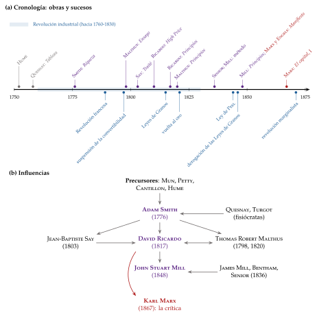
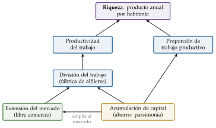
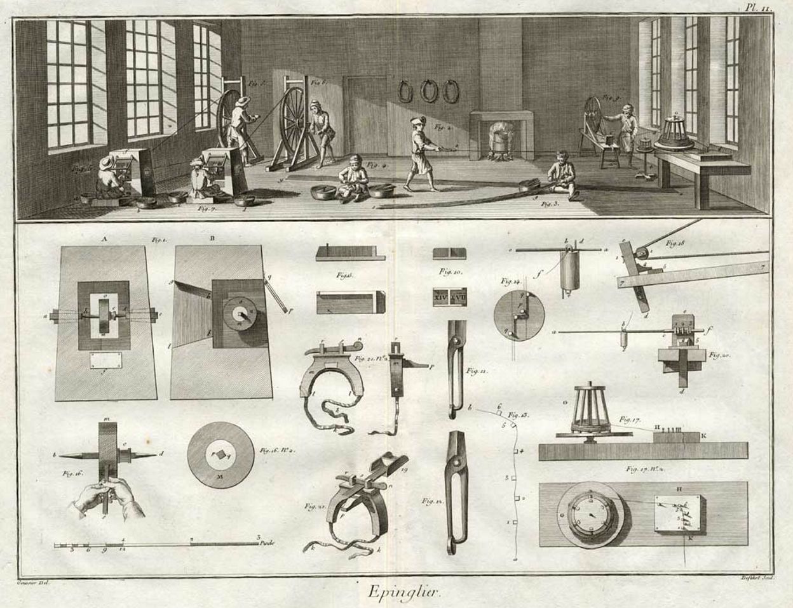
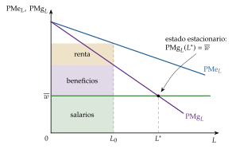
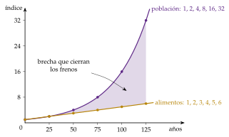
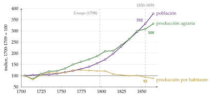
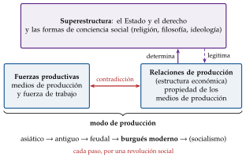
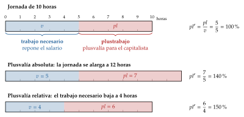

Tema 3.A.2
Los economistas clásicos y Marx.
Smith, Say, Ricardo, Malthus, Mill y Marx: división del trabajo, ley de Say, renta diferencial, población, estado estacionario, plusvalía y transformación.
Exclusivo Material exclusivo de victorgutierrezmarcos.es y la app Oposición TCEE · DCE. Puedes usarlo libremente para tu estudio personal. No se autoriza su incorporación a otras plataformas, aplicaciones o servicios. Condiciones de uso.
Introducción
Enganche:
«Cada uno habla de la feria según le va en ella», dice el refrán. El 5 de mayo de 2018, en el bicentenario de su nacimiento, la ciudad de Tréveris inauguró una estatua de bronce de Karl Marx de 5,5 metros con su pedestal, regalo del Gobierno chino; en 2023, la Universidad de Glasgow, donde Adam Smith estudió y enseñó, celebró su tricentenario.
Los 2 miraron la misma economía, la de la Revolución industrial, y vieron cosas opuestas: Smith, una sociedad en la que el interés de cada uno acaba en riqueza para todos; Marx, una en la que el capitalista se queda con parte de lo que produce el obrero.
Detrás está la pregunta de esta exposición: ¿de dónde sale la riqueza de una nación y quién se la queda?
Relevancia:
Para la teoría: los clásicos plantean las preguntas que la economía sigue haciéndose: el crecimiento [ver tema 3.A.43] [ver tema 3.A.44], el reparto de la renta entre los factores [ver tema 3.A.45], el comercio internacional [ver tema 3.B.5] y el dinero [ver tema 3.A.35].
Para la política económica: el libre comercio (la derogación de las Leyes de Granos en 1846), el patrón oro y la Ley bancaria de 1844 [ver tema 3.B.20], y el temor a los límites del crecimiento, de Malthus al Club de Roma [ver tema 3.B.31].
Para el temario: es la teoría que corrigen los neoclásicos [ver tema 3.A.3], la que Keynes discute con la ley de Say [ver tema 3.A.4] y la que Marx critica desde dentro.
Además, como toda historia del pensamiento económico, enseña a no quedarse con el último manual y a ver por qué unas ideas llegan en unas épocas y no en otras: son 2 de los 4 motivos que da Schumpeter para estudiarla.1
Contextualización:
Para seguir la historia de las ideas económicas hay que fijar antes 2 cosas: qué estudia la economía, su objeto [ver tema 3.A.1], y desde cuándo hay una ciencia económica. Tomamos el punto de partida de casi todos los manuales: 1776.
Pensamiento económico lo hubo siempre, de Aristóteles a los escolásticos, pero no una ciencia económica. Los escritos anteriores al siglo XVIII tenían 3 limitaciones:
no eran solo económicos: la riqueza aparecía dentro de la moral, la justicia, la teología o el gobierno del Estado;
eran más normativos que analíticos: recetaban lo que debía hacer el príncipe más que explicar cómo funciona la economía;
eran parciales: estudiaban un problema suelto (la moneda, la balanza comercial, el impuesto) y no un sistema.
En los 2 siglos anteriores, 3 corrientes preparan el terreno (anexo A):
los mercantilistas identifican la riqueza con los metales preciosos y piden al Estado que proteja la industria y el comercio exterior;2
la Escuela de Salamanca formula la teoría cuantitativa del dinero con Azpilcueta (1556), antes que Bodin (1568);
los fisiócratas, con el Tableau économique de Quesnay (1758), ven la economía como un circuito que se regula solo y defienden el laissez faire: son el precedente inmediato, porque ya piensan en un sistema.
En 1776, Smith (1776) los reúne en un sistema: con la Riqueza de las naciones empieza la escuela clásica, que llega hasta los Principios de J. S. Mill (1848) y domina la disciplina hasta la revolución marginalista de los años 70 [ver tema 3.A.3].
Es la época de la Revolución industrial, de la Revolución francesa y de las guerras con Francia, y la escuela es casi enteramente británica. Sus autores escriben en una economía que crece, pero con una población que aumenta deprisa y una tierra que no aumenta.
El nombre de clásicos se lo pone su gran crítico, Marx, que llama «economía política clásica» a la que, desde Petty, estudia las relaciones reales de producción; J. M. Keynes (1936, cap. 1) lo extenderá a los neoclásicos [ver tema 3.A.4].
Problemática:
¿Qué tienen en común los clásicos: qué estudian, con qué método y con qué ideas?
¿De dónde sale el valor de las cosas y cómo se reparte el producto entre salarios, beneficios y rentas?
¿Puede una economía crecer siempre, o va hacia un estado estacionario? ¿Puede faltar demanda?
¿Qué toma Marx de los clásicos y por qué llega a conclusiones opuestas?
Estructura:
La exposición va de la escuela en su conjunto a sus autores, y de estos a su crítico:
I. Caracterización general de la escuela clásica (I): quiénes la forman, cuándo, con qué ideas comunes y con qué método;
II. Los economistas clásicos y su pensamiento (II): Smith, Say, Ricardo, Malthus y John Stuart Mill, cada uno con los mismos 3 bloques: contexto, método y obra; líneas de investigación (el valor, el crecimiento y la distribución, la ley de Say y el dinero, y el comercio), y recomendaciones de política económica;
III. Crítica desde el marxismo: Karl Marx (1818-1883) (III): el materialismo histórico, la teoría del valor y la plusvalía, las leyes del movimiento del capitalismo y su valoración.
3.A.2. Los economistas clásicos y Marx
Introducción2′30″
I. Caracterización general de la escuela clásica5′30″
1. Caracterización general de la escuela clásica según Schumpeter
2. Autores y rango histórico
3. Ideas económicas de la economía política clásica
4. Método
II. Los economistas clásicos y su pensamiento13′
1. Adam Smith (1723-1790)
2. Jean-Baptiste Say (1767-1832)
3. David Ricardo (1772-1823)
4. Thomas Robert Malthus (1766-1834)
5. John Stuart Mill (1806-1873)
III. Crítica desde el marxismo: Karl Marx (1818-1883)8′
1. Contexto, método y obra
2. Aportaciones
3. Valoración y legado de Marx
Conclusión1′
Reparto del cante: introducción, 2′30″; I, 5′30″ (I.1, 1′30″; I.2, 1′30″; I.3, 1′30″; I.4, 1′); II, 13′ (II.1, 3′30″; II.2, 1′; II.3, 4′30″; II.4, 2′; II.5, 2′); III, 8′ (III.1, 1′30″; III.2, 5′; III.3, 1′30″), y conclusión, 1′. Marx no baja de 8′: es medio título y el tribunal espera oír su ecuación del valor. El modelo de distribución de Ricardo no baja de 2′: es el gráfico central del tema. Además del refrán del enganche, las pegatinas, cada una con su concepto: «aprendiz de mucho, maestro de nada» (la división del trabajo), «quien tiene tierra tiene guerra» (la renta de la tierra), «donde comen dos, comen tres» (Malthus, que dice lo contrario), «trabajar para el obispo» (la plusvalía) y «cría cuervos y te sacarán los ojos» (las leyes del movimiento del capitalismo). Los gráficos de cada bloque son la línea del tiempo (gráfico 1), los determinantes de la riqueza (gráfico 2), la tabla de 2×2 del paño y el vino, con la ventaja absoluta de Smith (tabla 1) y la comparativa de Ricardo, que solo cambia el 110 por el 90 (tabla 2), la distribución de Ricardo (gráfico 3), las progresiones de Malthus (gráfico 4), el materialismo histórico y la jornada laboral (gráficos 6 y 7). Las 2 funciones clave son el reparto del producto de Ricardo entre rentas, salarios y beneficios (2) y el valor de la mercancía de Marx (5), que la conclusión compara. Cada autor se canta con los mismos rótulos (contexto, método y obra; líneas de investigación; recomendaciones de política económica), salvo Say, que va en 1 minuto y sin ellos. Son de profundización (no se cantan): la caja del contexto histórico, las cajas grises de cada autor (la vida de Smith y sus anécdotas, la formulación moderna de la ley de Say, los orígenes del Ensayo de Malthus), la biografía de cada autor más allá de 2 datos, la teoría monetaria en detalle, la ventaja comparativa en extenso, el problema de la transformación paso a paso y los anexos.
I. Caracterización general de la escuela clásica
Empezamos por la escuela en su conjunto: quiénes la forman, cuándo, qué ideas comparten y con qué método trabajan.
Conclusión anticipada: la escuela clásica es casi enteramente británica, tiene un líder indiscutido, Smith, y comparte un objeto (el crecimiento de la riqueza y su reparto entre clases), unas pocas leyes (población, rendimientos decrecientes, flujo-especie y mercados), una teoría monetaria (el dinero solo fija los precios) y un método deductivo y verbal; dentro de ella, Malthus discrepa en la demanda, y Marx usa su aparato para criticarla.
I.1. Caracterización general de la escuela clásica según Schumpeter
Schumpeter reconoce una escuela de pensamiento por 3 rasgos: un líder, unos seguidores y un cuerpo doctrinal propio, con su objeto y su método. La escuela clásica los tiene, y a diferencia de la neoclásica [ver tema 3.A.3], con un líder indiscutido:
Líder: Adam Smith. Las preguntas de la Riqueza de las naciones (1776) (la división del trabajo, el valor, el reparto, la acumulación, el comercio y el papel del Estado) son las que se hacen todos los demás, y cada uno parte de lo que dejó el anterior: Ricardo corrige las incoherencias de Smith, y John Stuart Mill suaviza las conclusiones de Ricardo.
Seguidores: Jean-Baptiste Say en Francia; David Ricardo, James Mill, Robert Torrens, Nassau Senior y John Stuart Mill en Gran Bretaña.
Thomas Robert Malthus es clásico en la población y en la renta de la tierra, pero crítico en la demanda: niega que la oferta cree siempre su propia demanda.
Karl Marx no es un clásico más, sino su crítico: usa el aparato de la economía política clásica (la teoría del valor trabajo de Ricardo, el excedente, las clases y la acumulación) para llegar a conclusiones opuestas a las suyas (III.1).
Cuerpo doctrinal:
objeto: las causas de la riqueza de las naciones, su crecimiento a largo plazo y su reparto entre las 3 clases sociales (trabajadores, capitalistas y terratenientes) en salarios, beneficios y rentas. Es un objeto dinámico y agregado: no hay aún separación entre micro y macroeconomía, y el sujeto no es el individuo, sino la clase. Para Ricardo, «determinar las leyes que regulan esta distribución es el problema principal de la economía política»;
método: la economía política, verbal y sobre todo deductiva, con las instituciones dentro del análisis (I.4).
I.2. Autores y rango histórico
Periodo: de la Riqueza de las naciones a los Principios de J. S. Mill (1848), que fueron el manual de referencia hasta los de Marshall (1890) [ver tema 3.A.3]. Unos 70 años (casi 100 hasta la revolución marginalista) de pensamiento casi enteramente británico, con Say como gran excepción francesa.
Antes de 1776: los últimos mercantilistas y los fisiócratas ya veían que las piezas de la economía dependen unas de otras, pero nadie había juntado sus aportaciones en un sistema coherente. Lo hace un profesor escocés de filosofía moral, Adam Smith.
Los 3 grandes tratados:
An Inquiry into the Nature and Causes of the Wealth of Nations (1776), de Adam Smith (1723-1790);
On the Principles of Political Economy, and Taxation (1817), de David Ricardo (1772-1823);
Principles of Political Economy (1848), de John Stuart Mill (1806-1873).
2 críticos: Thomas Robert Malthus (1766-1834) es clásico en parte (la población, la renta), pero crítico en la demanda; Karl Marx (1818-1883) no es un clásico, sino su crítico desde dentro del aparato clásico:
Malthus aporta la teoría de la población, que todos aceptan, pero se aparta de la ortodoxia en la demanda agregada y en la defensa de los terratenientes;
Marx toma de los clásicos el valor trabajo, el excedente y las clases, añade conceptos propios y llega a conclusiones opuestas a las suyas.
El final: hacia 1870 la escuela pierde sus pilares: la doctrina de la población, la teoría del valor trabajo y la del fondo de salarios, de la que John Stuart Mill se retracta en 1869. La revolución marginalista abre otra etapa [ver tema 3.A.3].
El gráfico 1 reúne las fechas y las influencias: arriba, las obras y los sucesos que las rodean; abajo, quién influye en quién.

Fuente: elaboración propia. Las influencias, a partir de Landreth y Colander (2006), con Say, James Mill y Cantillon añadidos; las flechas indican el sentido de la influencia. En gris, los precursores; en morado, los clásicos; en rojo, Marx; en azul, los sucesos.
Contexto histórico: de Smith a Ricardo
1776: el mismo año de la Riqueza muere Hume y cae Turgot, el ministro reformista de Luis XVI. Smith escribe para una Gran Bretaña todavía agraria, antes de que la Revolución industrial se note en las cifras.
1789-1815: la Revolución francesa (en 1793 Luis XVI es guillotinado) y más de 20 años de guerra con Francia cambian las preguntas: la deuda, los impuestos, el precio del grano y el papel moneda.
La sucesión de Smith: 3 continuadores con proyectos distintos.
Say (1803) ordena la Riqueza y la lleva hacia la utilidad y el empresario;
Malthus (1798, 1820) se fija en la población y en la demanda; en 1805 es el primer profesor de economía política de Inglaterra, en el colegio de la Compañía de las Indias Orientales de Haileybury;
Ricardo (1817) la depura con un modelo deductivo del reparto, que se convierte en el sistema clásico.
1810-1811: en la controversia bullionista (I.3.3), Malthus y Ricardo traban una amistad que dura hasta la muerte de Ricardo, en 1823, con discrepancias en casi todo.
I.3. Ideas económicas de la economía política clásica
Una vez situados los autores en el tiempo, pasamos a lo que comparten: 3 rasgos, 4 leyes y una teoría del dinero.
I.3.1. Rasgos comunes
Los clásicos comparten 3 rasgos que los separan de los mercantilistas que los preceden y de los neoclásicos que los siguen:
Un sistema que tiende a la armonía: con competencia y libertad, el interés propio lleva al bien común sin que nadie lo planee. Viene del orden natural de los fisiócratas y es la mano invisible de Smith (II.1) [ver tema 3.A.22].
Frente a la Iglesia de los escolásticos, que juzgaba la moralidad de los tratos, y al mercantilista que pedía la intervención del Estado, los clásicos defienden los mercados libres y la libertad individual: la económica, además de buena en sí, hace que la economía funcione con la máxima eficiencia.
Pero no ignoran los conflictos: entre los terratenientes y quienes ganan con el crecimiento (Ricardo), y, a largo plazo, una tendencia al estado estacionario y a los salarios de subsistencia que dio a la economía fama de ciencia sombría.3
En esa armonía está el germen de la ortodoxia posterior (los mercados que se vacían) y en sus conflictos, el de la heterodoxia, que llevará Marx hasta el final.
El crecimiento a largo plazo: les interesa la acumulación y el reparto entre clases, no la asignación de unos recursos dados ni el ciclo.
Estudian los precios relativos y los mercados para entender cómo cambia el reparto de la renta con el tiempo, y miran también los factores culturales, políticos e históricos del crecimiento.
Suponen que la economía usa todos sus recursos, así que el paro masivo no es su problema: con precios y salarios flexibles los mercados se vacían y el dinero solo determina el nivel de precios [ver tema 3.A.4].
Por eso la teoría clásica, a diferencia de la neoclásica, es dinámica: los neoclásicos estudiarán desde los años 70 la asignación de recursos escasos con estática comparativa, y cambiarán también la pregunta, el sujeto, el valor, la distribución, el método y la política [ver tema 3.A.3].
Desconfianza del gobernante: el mercantilista se veía como el médico de la economía, con un remedio para cada mal, casi siempre una intervención del Estado. Smith duda de que el político sepa más que el mercado y de que tenga pericia para sustituir sus valoraciones por las propias. De ahí el laissez-faire, con excepciones que cada autor amplía (Mill, más que nadie).
I.3.2. Las 4 leyes de los clásicos
Los clásicos describen el orden natural con 4 leyes, que aceptan en mayor o menor medida:
Ley de los rendimientos decrecientes de la tierra: con la tierra fija, cada nueva dosis de trabajo y capital aplicada a una tierra dada rinde menos que la anterior (margen intensivo), y al crecer la población hay que cultivar tierras cada vez menos fértiles (margen extensivo). La había formulado Anne Robert Jacques Turgot (1767), y West, Malthus, Ricardo y Torrens la redescubren a la vez en 1815 [ver tema 3.A.11].
Ley de la población: la población crece mientras el salario supera el de subsistencia, y los alimentos no la siguen (II.4).
Mecanismo flujo-especie: con patrón oro, un superávit comercial trae oro, sube los precios y acaba con el superávit [ver tema 3.B.12].
Ley de los mercados o ley de Say: no puede haber un exceso de oferta general de bienes, porque los productos se compran con productos (II.2).
A ellas se suma la doctrina del fondo de salarios: a corto plazo, el salario es el capital que los capitalistas adelantan a los trabajadores dividido por su número; a largo plazo, la ley de la población lo lleva al de subsistencia (II.1).
Juntas dan la visión clásica del largo plazo: la acumulación hace crecer el empleo, la población lo sigue, la tierra peor encarece el grano y el beneficio cae hasta el estado estacionario; el dinero solo fija los precios.
I.3.3. La teoría monetaria clásica
La idea común: el dinero no es riqueza, sino el medio que la hace circular; a largo plazo, su cantidad solo fija el nivel de precios (la teoría cuantitativa) [ver tema 3.A.35]. Es el ataque al mercantilismo: acumular oro no enriquece a un país.
Hume (1752): el flujo-especie. Si un país vende más de lo que compra, le entra oro, suben sus precios frente a los del resto y sus exportaciones se encarecen, hasta que el superávit desaparece. La balanza comercial se ajusta sola [ver tema 3.B.12].
La controversia bullionista (1797-1821): en 1797, para financiar la guerra con Francia, el Banco de Inglaterra deja de convertir sus billetes en oro, y el precio del oro y el tipo de cambio suben.
Los bullionistas (Thornton, Horner, Ricardo) lo atribuyen a un exceso de billetes: la prima del oro mide la depreciación del papel. El Bullion Report del 8 de junio de 1810 les da la razón y pide volver a la convertibilidad.
Los antibullionistas, con los directores del Banco, lo atribuyen a la guerra (pagos al exterior, malas cosechas): mientras el banco descuente solo letras de operaciones reales, no puede emitir de más (la doctrina de las letras reales).
La ley de 1819, que impulsa Robert Peel, devuelve la convertibilidad en 1821.
Currency school frente a banking school (años 40): tras las crisis de 1825, 1836 y 1839, el debate es cómo evitar que el banco emita de más.
La currency school (Overstone, Torrens, Norman): los billetes deben variar exactamente como lo haría el oro, uno a uno con las reservas, por encima de una emisión fiduciaria fija. Hereda el bullionismo de Ricardo, su precursor: había propuesto pagar los billetes en lingotes y separar la emisión de la banca en un banco nacional, pero murió en 1823, antes del debate.
La banking school (Tooke, Fullarton): con convertibilidad, la cantidad de billetes la decide el comercio; el exceso vuelve al banco (la «ley del reflujo»), y los depósitos y las letras también son dinero.
Gana la primera con la Ley de Peel de 1844 (Bank Charter Act), que separa en el Banco de Inglaterra un departamento de emisión y otro de banca. Pero hubo que suspenderla en las crisis de 1847, 1857 y 1866, como predecía la banking school [ver tema 3.B.20].
I.4. Método
Con las ideas comunes a la vista, queda cómo llegan a ellas: el método.
¿Qué es la economía política? Para los clásicos, una ciencia moral (Smith era catedrático de filosofía moral): estudia cómo se producen y se reparten las riquezas y aconseja al legislador. El adjetivo «política» dice que la economía es asunto del Estado y que las instituciones están dentro del análisis [ver tema 3.A.1].
El ensayo: escriben en prosa, con ejemplos numéricos y sin matemáticas; sus «modelos» son razonamientos con supuestos explícitos.
Diferencias entre autores:
Smith: equilibra la deducción con la inducción, la historia y la descripción, como los filósofos de la Ilustración escocesa;
Ricardo y sus seguidores: deducción pura a partir de unos pocos supuestos. Schumpeter llamó vicio ricardiano a la costumbre de aplicar directamente a la política las conclusiones de modelos muy simplificados;
Malthus: deducción y datos; en la 2.ª edición del Ensayo (1803) apoya su tesis en la experiencia de muchos países;
Senior y John Stuart Mill convierten el método deductivo en doctrina:
Senior (1836) reduce la economía a 4 proposiciones generales y separa la ciencia, que describe, del arte, que aconseja;
Mill, en un ensayo publicado en 1836 y recogido en 1844, define la economía como una ciencia abstracta que estudia al hombre solo en cuanto desea riqueza, y la ve como un razonamiento a priori, verdadero solo en abstracto: es la figura que después se llamará homo oeconomicus [ver tema 3.A.1].4
Marx: el materialismo histórico; las leyes económicas no son naturales, sino propias de cada modo de producción (III.1).
Positiva y normativa: la distinción clásica es la de Senior entre ciencia y arte. Los términos son posteriores: la división en ciencia positiva, ciencia normativa y arte es de J. N. Keynes (1891) [ver tema 3.A.1]. Aplicados a los clásicos son un anacronismo útil, siempre que se avise.
Recapitulación: una escuela con líder, un objeto (la riqueza y su reparto entre clases), 4 leyes, una teoría monetaria y un método deductivo. Con este marco común, pasamos a ver qué aporta cada autor.
II. Los economistas clásicos y su pensamiento
Una vez visto lo que comparten, pasamos a lo que aporta cada uno: Adam Smith, Jean-Baptiste Say, David Ricardo, Thomas Robert Malthus y John Stuart Mill.
Cada autor se cuenta con los mismos 3 bloques, que se repiten también en Marx:
Contexto, método y obra: quién es, cuándo escribe, cómo razona, qué publica y qué lugar ocupa en la escuela;
Líneas de investigación: el valor, el crecimiento y la distribución, la ley de Say y el dinero, y el comercio internacional;
Recomendaciones de política económica: lo que su análisis aconseja al legislador.
Say, del que se habla menos, va en viñetas, sin esos 3 bloques.
Conclusión anticipada:
Smith pone la riqueza en la división del trabajo y el mercado;
Say formula la ley de los mercados;
Ricardo demuestra que la tierra frena la acumulación y defiende el libre comercio;
Malthus añade la población y la demanda;
Mill separa la producción, sujeta a leyes, del reparto, que depende de las instituciones.
II.1. Adam Smith (1723-1790)
II.1.1. Contexto, método y obra
Vida:
Adam Smith nace en Kirkcaldy (Escocia) en 1723 y muere en Edimburgo en 1790.
Es catedrático de filosofía moral en Glasgow (1752-1764) y amigo de David Hume.
Como tutor del joven duque de Buccleuch viaja por Francia y Suiza (1764-1766), y en París trata a los fisiócratas François Quesnay y Turgot.
A la vuelta escribe la Riqueza, y en 1778 es nombrado comisario de aduanas de Escocia.
Contexto:
Escribe en una Gran Bretaña con una burguesía en ascenso que quiere libertad económica y política y pagar menos impuestos.
Tras la guerra de los Siete Años (1756-1763), la hegemonía británica se paga con más gasto y más impuestos, y la Corona vende patentes y concede monopolios a compañías privilegiadas.
El régimen parlamentario se consolida, y la burguesía quiere oír que su esfuerzo la hace la clase dinámica de la nación: Smith será el abanderado de su causa económica.
Obra:
The Theory of Moral Sentiments: la conducta humana nace de los sentimientos, y la simpatía, ponerse en el lugar del otro ante un «espectador imparcial», modera el interés propio.
An Inquiry into the Nature and Causes of the Wealth of Nations, en 5 libros: el 1.º, sobre la división del trabajo, el valor y el reparto; el 2.º, sobre el capital; el 3.º, sobre la historia del progreso de la riqueza; el 4.º, sobre la crítica del mercantilismo y de los fisiócratas, y el 5.º, sobre las finanzas del Estado.
Método:
Smith combina la deducción con la historia y la observación (I.4).
Sus recomendaciones dependen del contexto: es partidario del laissez-faire, pero con excepciones.
Lugar en la escuela:
1776 es un hito: muchos ven en la Riqueza el nacimiento de la economía como ciencia autónoma, separada de la filosofía y de la política, y el de la escuela clásica.
Schumpeter objetó que tiene pocas ideas del todo nuevas, pero reconoce que hizo la síntesis que la época necesitaba: une en un sistema las piezas de mercantilistas, fisiócratas y filósofos. Por eso es el líder de la escuela.
La vida de Adam Smith, con sus anécdotas
Infancia: es bautizado en Kirkcaldy (Fife) el 5 de junio de 1723; su padre, interventor de aduanas del mismo nombre, había muerto meses antes. Es un niño introvertido, de físico desgraciado y tartamudo, que solo recibe el afecto de su madre.
La fecha es juliana: Gran Bretaña no adopta el calendario gregoriano hasta 1752, así que su 5 de junio no coincide de verdad con el de Keynes (1883).
El robo: a los 3 años (4, según Jean-Marc Daniel) se lo llevan unos gitanos o vagabundos. Según Jean-Marc Daniel, se lo devuelven a la familia porque es incapaz de convertirse en ladrón; según otras biografías, su tío lo recupera enseguida.
A la vuelta lo separan de su medio hermano, hijo del primer matrimonio de su padre, y se vuelve aún más huraño.
Estudios y cátedra: entra en la Universidad de Glasgow con 14 años (1737), donde le marca Francis Hutcheson, y pasa de 1740 a 1746 en el Balliol College de Oxford con una beca Snell.
Es catedrático en Glasgow de lógica (1751) y de filosofía moral (1752-1764): pese al tartamudeo, da lecciones originales inspiradas en la Ilustración escocesa (David Hume, Francis Hutcheson). De ellas salen los Sentimientos morales (1759), que le dan fama.
El viaje: David Hume le presenta a Charles Townshend, político influyente deseoso de alejar a los hijastros que su mujer tenía de un matrimonio anterior. A finales de 1763 le ofrece una pensión vitalicia de 300 libras para que sea tutor del joven duque de Buccleuch, y viajan por Francia y Suiza (1764-1766):
en Toulouse, una ciudad en decadencia que le aburre, empieza a escribir un libro para pasar el tiempo, según cuenta en una carta a David Hume;
en Ginebra conoce a Voltaire;
en París trata a los fisiócratas (François Quesnay, Turgot), se reencuentra con David Hume y conoce, según Jean-Marc Daniel, a Benjamin Franklin, Diderot y d’Alembert;
la muerte de Hew Scott, hermano menor del duque, en 1766, obliga a volver de repente.
La Riqueza y la aduana: la escribe en Kirkcaldy y Londres y se publica el 9 de marzo de 1776, con un éxito inmediato.
Según Jean-Marc Daniel, rechaza una cátedra prestigiosa y pide un puesto de aduanero, como su padre: en 1778 es nombrado comisario de aduanas de Escocia, en Edimburgo, y para el cargo insiste en llevar el uniforme de su medio hermano, ya muerto.
Final: vive con su madre hasta que ella muere (1784); desde entonces vaga por las calles de Edimburgo, cada vez más excéntrico. Muere el 17 de julio de 1790 en un relativo olvido, pero con una obra que cambiaría la forma de ver el mundo.
Para verlo: 2 documentales de Free To Choose Network, The Real Adam Smith: Morality and Markets y The Real Adam Smith: Ideas That Changed The World.
II.1.2. Líneas de investigación
Las líneas de Smith van de la conducta del individuo a la riqueza de la nación: la mano invisible, la naturaleza y las causas de la riqueza, el valor, el crecimiento y la distribución, el ahorro y el dinero, y el comercio internacional.
La mano invisible
La mano invisible se enuncia en la Riqueza (1776), pero recoge ideas ya desarrolladas en los Sentimientos morales (1759). El razonamiento de Smith se resume en 6 puntos:
El individuo está en el centro del universo económico y social.
El comportamiento del ser humano se funda en sentimientos.
Smith es un moralista: para entender la economía hay que entender bien la naturaleza moral del ser humano.
Los individuos buscan su propio interés.
Uno de los primeros sentimientos del individuo es velar por sí mismo e intentar mejorar su condición.5
En el intercambio, cada uno ofrece al otro lo que a este le interesa: «no es de la benevolencia del carnicero, del cervecero o del panadero de donde esperamos nuestra cena, sino de que miren por su propio interés».
La persecución del interés individual lleva al beneficio social.
Quien busca su propia ganancia es «conducido por una mano invisible a promover un fin que no entraba en sus intenciones»: la actividad humana tiene un orden natural que se regula solo.
Con competencia, el interés propio lleva a producir lo que la sociedad desea al menor coste: el precio de mercado gravita hacia el natural [ver tema 3.A.16].
La armonía entre el interés público y el privado se rompe con las prácticas empresariales, el monopolio y los acuerdos.6
«La gente del mismo oficio rara vez se reúne, ni siquiera para divertirse, sin que la conversación acabe en una conspiración contra el público o en alguna maquinación para subir los precios».
Los principios morales hacen prevalecer la armonía natural.
Smith es optimista: por egoísta que sea el hombre, hay en su naturaleza principios que le hacen interesarse por la suerte de los demás, y eso sostiene una sociedad ordenada.
La metáfora aparece solo 3 veces en Smith: en su historia de la astronomía, escrita antes de 1758 y publicada en 1795 (la «mano invisible de Júpiter»); en los Sentimientos morales, para el reparto de lo necesario para vivir, y una sola vez en la Riqueza. Es secundaria en su obra, y la posteridad la ha puesto en el centro.
Es el antecedente intuitivo del primer teorema fundamental de la economía del bienestar (1TFEB), que la economía moderna demuestra con supuestos precisos [ver tema 3.A.22]; la teoría de los fallos de mercado precisa cuándo deja de funcionar [ver tema 3.A.23].
Naturaleza y causas de la riqueza de las naciones
La primera frase de la Riqueza ya ataca al mercantilismo: «el trabajo anual de cada nación es el fondo que la provee originalmente de todas las cosas necesarias y convenientes para la vida».
La riqueza es el producto del trabajo, no el oro acumulado, y depende de 2 cosas (gráfico 2):
la productividad del trabajo, que crece con la división del trabajo. En una pequeña fábrica de alfileres, 10 operarios que se reparten 18 operaciones hacen más de 48.000 alfileres al día, 4.800 por cabeza, cuando uno solo quizá no haría ni 20 (imagen 1). Las 3 causas son la destreza que da la práctica, el tiempo que se ahorra al no cambiar de tarea y las máquinas que se inventan para cada tarea. Es lo contrario del refrán «aprendiz de mucho, maestro de nada»;
la proporción entre trabajo productivo e improductivo. Productivo es el que se fija en una mercancía vendible y añade valor a la materia que trabaja (el del obrero); improductivo, el que se consume en el momento en que se presta (el del criado, el del soberano, el del músico), como casi todos los servicios. No es que no sea útil: es que no deja un producto con el que pagar más trabajo.
Los límites:
la división del trabajo está limitada por la extensión del mercado: de ahí el libre comercio;
y exige acumular capital antes de producir, el fondo con que se pagan los salarios mientras dura el proceso: de ahí la parsimonia (libro II);
la acumulación de capital, además, amplía el mercado: hace crecer la renta que se gasta y paga los caminos, canales y puertos que abaratan el transporte, y con ello deja ir más lejos a la división del trabajo.
La división del trabajo con rendimientos crecientes es el antecedente del crecimiento endógeno [ver tema 3.A.44].


Fuente: lámina II de «Épinglier», dibujo de Goussier y grabado de Defehrt, en el Recueil de planches de la Encyclopédie de Diderot y d’Alembert (1762); dominio público (Goussier y Defehrt, 1762). Cifras: Smith (1776, lib. I, cap. I).
Teoría del valor
Smith distingue entre valor de intercambio y valor de uso:
el valor de intercambio (el precio) es la capacidad de un bien para comprar otros: cómo se cambia en el mercado una mercancía por otra;
el valor de uso (la utilidad) es la capacidad de un bien para satisfacer una necesidad.
La paradoja del agua y los diamantes:
El agua tiene más valor de uso que los diamantes, pero casi no se cambia por nada; el diamante casi no tiene uso, pero se cambia por muchísimo.
Smith concluye que la utilidad poco tiene que ver con el valor de intercambio. La paradoja no se resolverá hasta que los marginalistas distingan la utilidad total de la marginal [ver tema 3.A.3].
La medida del valor: el trabajo comandado, el que una mercancía permite comprar, es para Smith «la medida real del valor de cambio».
La causa del valor: el valor de intercambio lo fijan los costes de producción, el pago a los factores. Es una teoría del valor por el lado de la oferta, en la que la demanda no interviene. Depende del tipo de sociedad:
en el estado primitivo, sin capital acumulado ni tierra apropiada, el producto es todo del trabajador y los bienes se cambian según el trabajo incorporado: si cazar un castor cuesta el doble que cazar un ciervo, un castor vale 2 ciervos. El trabajo no se mide solo por las horas: cuentan también la dureza y la destreza (libro I, cap. VI);
en la sociedad avanzada, con capital acumulado y tierra apropiada, el precio tiene que pagar a los 3 factores: salarios, beneficios y rentas (libro I, cap. VI).
Precio natural y precio de mercado (libro I, cap. VII) [ver tema 3.A.16]:
el precio natural es la suma de los salarios, los beneficios y las rentas a sus tasas naturales: lo justo para pagar a los factores;
el precio de mercado es el que fijan la oferta y la demanda efectivas, y fluctúa;
la competencia hace que el precio de mercado gravite hacia el natural, un precio central en torno al cual se mueve el de toda mercancía.
El problema:
Si el precio es la suma de salarios, beneficios y rentas, y estos son a su vez precios, la explicación es circular.
Con la renta Smith se contradice: en el capítulo VI es un componente del precio; en el XI, su efecto. Ricardo se queda con la 2.ª idea (II.3.2).
Crecimiento y distribución
En el estado primitivo el trabajador recibe todo el producto; en la sociedad avanzada, el producto se reparte entre trabajadores (salarios), capitalistas (beneficios) y terratenientes (rentas).
Salarios:
a corto plazo, con la población dada, el fondo de salarios: los paga un fondo que los capitalistas adelantan, parte del capital circulante; el salario medio es el fondo dividido entre los trabajadores;
a largo plazo, con la población variable, el salario natural: tiende al nivel que permite mantener a la familia y reponer la población. Pero en un país que crece el salario es más alto: la «recompensa liberal del trabajo» es efecto y síntoma de la riqueza creciente. Smith no habla de una «ley de hierro de los salarios»: el nombre se lo pondrá Lassalle (1863) a la idea del salario de subsistencia.
Beneficios:
Son la remuneración de quien adelanta el capital. Incluyen el interés y una prima por el riesgo: la tasa mínima de beneficio tiene que cubrir las pérdidas ocasionales, y el interés que se puede pagar sale del beneficio neto.
Con la acumulación y la competencia entre capitales, las oportunidades de inversión se agotan y la tasa de beneficio tiende a bajar.
Rentas:
Son el precio por usar la tierra, un precio de monopolio, lo más que el arrendatario puede pagar (libro I, cap. XI).
Para Smith el residuo es la renta; para Ricardo, el beneficio.
El ahorro y el dinero
La ley de Say antes de Say:
Lo que se ahorra cada año se consume tan regularmente como lo que se gasta, y casi al mismo tiempo, pero por otras personas: los trabajadores productivos que lo cobran como salario.
El ahorro no frena la demanda: la cambia de manos. La parsimonia, y no el gasto, hace crecer el capital.
Jean-Baptiste Say, que difunde a Smith en el continente, convertirá esta idea en la ley de los mercados (II.2).
El dinero:
Es la «gran rueda de la circulación», que no produce nada. Los billetes convertibles ahorran oro y lo liberan para comprar capital fuera.
Para no emitir de más, los bancos deben descontar solo letras de operaciones reales a corto plazo: la doctrina de las letras reales, antecedente de la banking school (I.3.3).
Comercio internacional: la ventaja absoluta
La idea: contra el mercantilismo, el comercio no es un juego de suma cero: ganan los 2 países. Su razón es la del padre de familia prudente, que no intenta hacer en casa lo que le costaría más hacer que comprar [ver tema 3.B.5].
La ventaja absoluta: un país la tiene en un bien si lo produce con menos trabajo por unidad que el otro; cada país exporta los bienes en que la tiene e importa el resto.
El ejemplo (tabla 1): para ilustrarlo usamos ya el ejemplo con el que Ricardo explicará la ventaja comparativa en sus Principles (1817), con Inglaterra, Portugal, paño y vino, y una sola cifra cambiada, el paño portugués.
Inglaterra hace el paño con menos trabajo que Portugal (100 frente a 110), y Portugal el vino con menos trabajo que Inglaterra (80 frente a 120).
A Inglaterra le conviene especializarse en paño y cambiarlo por vino portugués, y a Portugal, al revés: ganan los 2.
Esta tabla de 2×2 vuelve en Ricardo: basta con cambiar el 110 por el 90 (II.3.2).
| Inglaterra (A) | Portugal (B) | |
|---|---|---|
| Paño (\(X\)) | \(a_X^A=100\) | \(a_X^B=110\) |
| Vino (\(Y\)) | \(a_Y^A=120\) | \(a_Y^B=80\) |
Fuente: elaboración propia, con las cifras de Ricardo (1821, cap. 7) salvo el paño portugués (110 en lugar de 90). En azul, la ventaja absoluta de cada país.
Ventajas del comercio: amplía la cantidad de bienes disponibles; amplía el mercado y con él la división del trabajo, y da salida a los excedentes que el mercado interior no absorbe.
Excepciones:
la defensa, porque «la defensa es mucho más importante que la opulencia» (por eso aprueba el Acta de Navegación);
los aranceles de represalia, si sirven para que el otro país baje los suyos.7
El límite: con ventaja absoluta, un país menos productivo en todo no podría exportar nada, y queda abierto a qué precio se cambian los bienes. Lo primero lo resolverá Ricardo (II.3.2); lo segundo, John Stuart Mill (II.5.2).
II.1.3. Recomendaciones de política económica
El sistema de libertad natural: Smith aboga por el laissez-faire, con unos deberes muy concretos para el soberano:
la defensa frente a otras sociedades;
la justicia, que protege a cada uno de la opresión de los demás;
las obras e instituciones públicas que ningún particular haría porque no le serían rentables, aunque a la sociedad sí (caminos, puertos, la educación del pueblo).
Contra los privilegios: las compañías privilegiadas, los gremios y los aranceles son lo que el «sistema mercantil» da a los comerciantes a costa de los consumidores. El Estado debe quitar los obstáculos a la libre competencia, sin posiciones de privilegio, para que funcione la armonía natural de intereses.
Los impuestos:
4 máximas: igualdad (según la renta), certeza, comodidad en el pago y economía en la recaudación;
la renta del suelo puede soportar un impuesto propio, porque se cobra por un recurso limitado y no por un esfuerzo; el impuesto debe recaer sobre la renta de la tierra y no sobre su producto;
los impuestos sobre los salarios y sobre el capital, en cambio, acaban encareciendo el trabajo o ahuyentando el capital, y desaniman la producción.
II.2. Jean-Baptiste Say (1767-1832)
Smith ya decía que lo ahorrado se gasta igual (II.1.2); Jean-Baptiste Say lo convierte en una ley. De él se habla menos, así que va sin los 3 bloques de los demás autores.
El autor: industrial del algodón, periodista y profesor en París. Su Traité d’économie politique difunde a Smith en el continente, con un orden más claro.
2 novedades sobre Smith:
el valor nace de la utilidad, no solo del trabajo: es un precursor de los neoclásicos [ver tema 3.A.3];
el empresario, el que organiza la producción, es un agente distinto del capitalista.
La ley de los mercados: en el capítulo «Des débouchés», Say sostiene que un producto, en cuanto se termina, abre una salida a otros productos por todo su valor, porque quien vende quiere gastar enseguida el dinero que obtiene.
Los productos se compran con productos; el dinero es solo un medio de cambio.
Implicación: puede sobrar producción de un bien, si se ha producido mal, pero no de todos a la vez: el exceso de oferta de unos va con un exceso de demanda de otros.
El debate del exceso general de oferta (general glut, 1819-1824): Sismondi y Malthus sostienen que puede faltar demanda efectiva (II.4.2); Say, Ricardo y James Mill responden que lo ahorrado se invierte y se gasta igual. Ganan los segundos, y la ley queda en la ortodoxia hasta Keynes [ver tema 3.A.42].
La ley de Say: quién la formula y cómo se escribe hoy
Quién la formula: en inglés la expone antes J. Mill (1808), el padre de John Stuart: el poder de compra de una nación es su producto anual. La frase «la oferta crea su propia demanda» no es de Say: es como la resume J. M. Keynes (1936, cap. 2) para atacarla [ver tema 3.A.4].
En lenguaje moderno: en la formulación de Lange (1942), la ley de Say afirma que el valor de los excesos de demanda de los bienes, sin contar el dinero, es idénticamente nulo, y por tanto que nunca puede haber un exceso de oferta general de bienes. Con \(n\) bienes de precios \(p_k\) y excesos de demanda \(z_k(\vec{p})\) [ver tema 3.A.21]: \[\tag{1} \sum_{k=1}^{n}p_k\,z_k(\vec{p})\equiv 0\] No debe confundirse con la ley de Walras, que es una identidad que incluye todos los mercados, también el del dinero [ver tema 3.A.21]; y es la que Keynes critica: en una economía monetaria, un exceso de oferta de bienes puede ir acompañado de un exceso de demanda de dinero [ver tema 3.A.4].
Identidad e igualdad: Becker y Baumol (1952) distinguen la identidad de Say, que se cumple a cualquier precio y deja al dinero sin papel, de la igualdad de Say, que solo se cumple en equilibrio y admite excesos de oferta temporales: es la de John Stuart Mill (II.5.2).
Más sobre la ley y sus versiones, en la entrada «Ley de Say» de Wikipedia.
II.3. David Ricardo (1772-1823)
II.3.1. Contexto, método y obra
Vida:
Hijo de un agente de bolsa judío sefardí llegado de Holanda, David Ricardo hace fortuna joven en la Bolsa de Londres, se retira de los negocios a partir de 1814 y es diputado desde 1819 hasta su muerte.
Entra en la economía por la controversia bullionista (I.3.3).
Contexto:
Las guerras con Francia habían cerrado el comercio, forzado a producir más grano en Gran Bretaña y subido su precio y la renta de la tierra.
Con la paz, los terratenientes, alarmados por la caída de los precios agrícolas, logran las Leyes de Granos (1815), que frenan la importación de trigo.
Robert Peel las deroga en 1846, en plena hambruna irlandesa (1845-1849) [ver tema 3.B.20].
Obra:
An Essay on the Influence of a Low Price of Corn on the Profits of Stock, el primer esbozo de su modelo;
los Principles, con 3 ediciones en vida (1817, 1819 y 1821); la 3.ª, que da la numeración de capítulos que se cita, añade el de la maquinaria.
Método:
Ricardo pasa de la riqueza de Smith al reparto: «determinar las leyes que regulan esta distribución es el problema principal de la economía política» (prefacio).
Es el primero que razona con modelos: supuestos simples, deducción y conclusiones que se aplican a la política.
Lugar en la escuela:
Por el método, es el pionero de los modelos, la herramienta básica de la economía actual; pero también el origen de lo que Schumpeter llama el vicio ricardiano, aplicar a la política modelos abstractos con supuestos poco realistas y sin contraste empírico (I.4).
Por las aportaciones, su modelo de distribución se convierte en el sistema clásico, y la ventaja comparativa sustituye a la ventaja absoluta de Smith.
II.3.2. Líneas de investigación
Las líneas de Ricardo giran en torno al reparto: el valor, el modelo de distribución, la ley de Say y el dinero, y el comercio internacional.
Teoría del valor
La regla: Ricardo toma la teoría del valor trabajo que Smith reservaba al estado primitivo y la aplica también a la sociedad avanzada.
«El valor de una mercancía, o la cantidad de cualquier otra mercancía por la que se cambia, depende de la cantidad relativa de trabajo necesaria para producirla, y no de la mayor o menor remuneración que se paga por ese trabajo».
Es el trabajo incorporado, directo e indirecto (el de las herramientas).
Las salvedades:
«la utilidad no es la medida del valor de cambio, aunque le es absolutamente esencial» (cap. 1; traducción propia);
los bienes que no se pueden reproducir (una estatua, un vino raro) valen por su escasez, pero son una parte mínima del comercio;
si los bienes usan capital fijo de distinta duración, una subida de salarios cambia los precios relativos aunque no cambie el trabajo (cap. 1, secc. 4-5): de ahí que Stigler (1958) hable de una teoría del valor trabajo «del 93 %».
La renta no entra en el precio:
El precio del grano lo fija el trabajo necesario en la tierra peor que se cultiva, la que no paga renta: «el grano no es caro porque se pague una renta, sino que se paga una renta porque el grano es caro».
Así resuelve la circularidad de Smith.
La medida invariable: Ricardo buscó hasta su muerte una mercancía de valor constante con la que medir los cambios del reparto; no la encontró. Sraffa (1960) la construirá con su «mercancía patrón».
Crecimiento y distribución: el modelo de Ricardo
a) Idea
¿Qué pasa con el reparto cuando el país acumula capital y crece la población? Suben las rentas, el salario real se queda en el de subsistencia y la tasa de beneficio cae hasta que la acumulación se para.
La culpa es de la tierra, no de los capitalistas ni de los trabajadores: «quien tiene tierra tiene guerra».
Es el primer modelo de crecimiento y distribución de la historia del pensamiento, escrito contra las Leyes de Granos.
b) Modelo
i) Supuestos:
Un solo sector, la agricultura, y un solo bien, el grano, que es a la vez producto, capital y salario.
3 clases: los terratenientes cobran la renta y la gastan en lujo; los trabajadores cobran el salario y lo consumen; los capitalistas adelantan los salarios (el capital es el fondo de salarios, \(K=\bar w L\)), cobran el beneficio, \(B\), y lo ahorran e invierten.
Rendimientos decrecientes de la tierra: cada nueva dosis de trabajo y capital, \(L\), aplicada a una tierra dada rinde menos que la anterior (margen intensivo), y hay que cultivar tierras cada vez peores (margen extensivo) (I.3.2) [ver tema 3.A.11].
Salario natural: la población sigue al salario (Malthus): si supera el de subsistencia, \(\bar w\), crece, y a largo plazo el salario real es \(\bar w\).
El beneficio es el residuo: lo que queda tras pagar la renta y los salarios.
ii) Desarrollo:
Con una producción \(Y=F(L)\) en la tierra disponible, el producto medio es \(\mathrm{PMe}_L=F(L)/L\) y el marginal \(\mathrm{PMg}_L=F'(L)\), menor y decreciente.
El reparto: la última dosis no paga renta, así que la tierra cobra lo que el producto medio supera al marginal (renta diferencial: la tierra mejor cobra la diferencia entre lo que rinde y lo que rinde la peor que se cultiva); los trabajadores, el salario de subsistencia, y los capitalistas, el resto:8
\[Y=\underbrace{(\mathrm{PMe}_L-\mathrm{PMg}_L)\,L}_{\text{rentas}}+\underbrace{\bar w\,L}_{\text{salarios}}+\underbrace{(\mathrm{PMg}_L-\bar w)\,L}_{\text{beneficios, }B}\tag{2}\]
La tasa de beneficio: como el capital son los salarios adelantados, \(K=\bar w L\), \[\tag{3} \frac{B}{K}=\frac{(\mathrm{PMg}_L-\bar w)\,L}{\bar w\,L}=\frac{\mathrm{PMg}_L-\bar w}{\bar w}\]
La dinámica (gráfico 3): mientras \(B/K>0\), los capitalistas acumulan, el fondo de salarios crece, el salario sube por encima de \(\bar w\) y la población aumenta hasta devolverlo a \(\bar w\). Con más \(L\) cae \(\mathrm{PMg}_L\): sube la renta y bajan los beneficios y la tasa de beneficio.
El estado estacionario, en \(L^*\): cuando \(\mathrm{PMg}_L(L^*)=\bar w\), la tasa de beneficio es nula, nadie acumula, la población deja de crecer y todo el excedente es renta.
Un aviso sobre el gráfico: aunque los gráficos sirven para ilustrar y entender mejor el pensamiento de Ricardo, este no fue elaborado de forma original por el autor, que no dibujó ninguno: es una reconstrucción posterior.9

Fuente: elaboración propia a partir de Kaldor (1956) y Blaug (1997, cap. 4). El gráfico ilustra las ideas de Ricardo, pero no es suyo: Ricardo no dibujó ningún gráfico. Con \(F(L)=9L-L^2/2\) y \(\bar w=3\): en \(L_0=3{,}5\), renta 6,1, beneficios 8,75 y salarios 10,5; en \(L^*=6\), renta 18, salarios 18 y beneficios 0. Curvas ilustrativas.
iii) Implicaciones:
Los intereses de los terratenientes se oponen a los de las demás clases: ganan con todo lo que encarece el grano.
Lo que retrasa el estado estacionario:
el progreso técnico en la agricultura, que sube la curva del producto marginal;
el libre comercio del grano: importar trigo barato permite abandonar las tierras peores, baja la renta y sube el beneficio. De ahí su campaña contra las Leyes de Granos.
c) Extensiones
La versión gráfica es posterior: la reconstruyen con un solo bien Kaldor (1956) y Pasinetti (1960); es la que se dibuja hoy.
La maquinaria: en la 3.ª edición (1821) añade un capítulo en el que admite que las máquinas pueden dejar sin trabajo a parte de los obreros [ver tema 3.A.4].
La acumulación: en Ricardo se frena por la tierra; en Marx será el motor del sistema y el origen de las crisis (III.2) [ver tema 3.A.34].
d) Evidencia empírica
El estado estacionario no llegó: en el siglo XIX el progreso técnico y la importación de grano, sobre todo tras la derogación de 1846, fueron más deprisa que los rendimientos decrecientes, y el salario real subió [ver tema 3.B.20].
e) Valoración
Lo que acierta:
el razonamiento en el margen (la renta como diferencia) es el germen del análisis marginal [ver tema 3.A.3];
la idea de que un factor fijo frena el crecimiento si no hay progreso técnico reaparece en los rendimientos decrecientes del capital que llevan al estado estacionario de Solow, donde el crecimiento a largo plazo solo lo sostiene el progreso técnico [ver tema 3.A.43].
Lo que falla:
infravalora el progreso técnico y supone que la población devuelve siempre el salario a la subsistencia;
con un solo bien, además, evita el problema del valor que Marx tendrá que afrontar.
La ley de Say y el dinero
Ley de Say:
Ricardo la acepta sin reservas: «nadie produce si no es para consumir o vender, y nadie vende si no es para comprar otra mercancía».
Lo que puede faltar es beneficio, no demanda; frente a Malthus, niega que pueda haber un exceso general de oferta (II.2).
Dinero:
Es el gran bullionista: la prima del oro prueba que el Banco de Inglaterra ha emitido de más.
Propone un patrón en lingotes y un banco nacional que separe la emisión del crédito: es el precursor de la currency school, aunque muere en 1823, antes de su debate (I.3.3).
Comercio internacional: la ventaja comparativa
La pregunta: ¿puede comerciar con provecho un país que lo produce todo peor que otro? Ricardo responde que sí [ver tema 3.B.5].
El ejemplo: es el de la tabla de Smith (tabla 1), con Inglaterra (A) y Portugal (B), que producen paño (\(X\)) y vino (\(Y\)) solo con trabajo; \(a_X^A\) es el trabajo (hombres durante un año) que cuesta una unidad de \(X\) en A.
Basta con cambiar el 110 del paño portugués por 90, la cifra de Ricardo (tabla 2): ahora Portugal tiene ventaja absoluta en los 2 bienes.
| Inglaterra (A) | Portugal (B) | |
|---|---|---|
| Paño (\(X\)) | \(a_X^A=100\) | \(a_X^B=90\) |
| Vino (\(Y\)) | \(a_Y^A=120\) | \(a_Y^B=80\) |
Fuente: Ricardo (1821, cap. 7), con la notación del temario. En azul y sombreada, la ventaja comparativa de cada país: Inglaterra, en paño; Portugal, en vino.
En qué tiene ventaja comparativa cada uno: cada país la tiene en el bien que produce con menor coste comparativo, lo que le cuesta en términos del otro bien que deja de producir.
Inglaterra, en el paño: es peor en los 2 bienes, pero su desventaja es menor en el paño (necesita 100/90 = 1,11 veces el trabajo portugués) que en el vino (120/80 = 1,5 veces). Una unidad de paño le cuesta 100/120 = 0,83 unidades de vino, y a Portugal, 90/80 = 1,125.
Portugal, en el vino: es mejor en los 2 bienes, pero su ventaja es mayor en el vino (necesita 80/120 = 0,67 veces el trabajo inglés) que en el paño (90/100 = 0,9 veces). Una unidad de vino le cuesta 80/90 = 0,89 unidades de paño, y a Inglaterra, 120/100 = 1,2.
La especialización: A se especializa en \(X\) y B en \(Y\), y el comercio beneficia a los 2 si la relación real de intercambio queda entre los 2 costes comparativos: \[\tag{4} \frac{a_X^A}{a_Y^A}=\frac{100}{120}\;<\;\mathrm{RRI}=\frac{p_X}{p_Y}\;<\;\frac{a_X^B}{a_Y^B}=\frac{90}{80}\] Con \(\mathrm{RRI}=1\), Inglaterra consigue con 100 unidades de trabajo en paño un vino que le costaría 120, y Portugal, con 80 en vino, un paño que le costaría 90.
Lo que deja abierto: dónde se fija la RRI entre esos límites; lo cerrará Mill con la demanda recíproca (II.5.2).
La autoría: antes que Ricardo la apuntan un folleto anónimo de 1814 y Torrens (1815); la exposición que queda es la de Ricardo. El desarrollo completo, en el anexo C.
II.3.3. Recomendaciones de política económica
Ricardo, como Smith, defiende las virtudes de un sistema que se regula solo. De su obra salen 3 recomendaciones:
Libre comercio: la derogación de las Leyes de Granos es su gran causa (II.3.2); Malthus, en cambio, defiende la protección.
Impuestos: casi todos acaban recayendo sobre los beneficios y frenan la acumulación; los menos dañinos son los que recaen sobre la renta de la tierra y sobre los bienes de lujo. Prefiere pagar la guerra con impuestos y no con deuda.10
Dinero: vuelta a la convertibilidad, con un patrón en lingotes (II.3.2).
II.4. Thomas Robert Malthus (1766-1834)
II.4.1. Contexto, método y obra
Ricardo incorporó la teoría de la población de Malthus a su modelo; pasamos a su autor, que fue a la vez su amigo y su principal contradictor.
Vida:
Thomas Robert Malthus estudia en Cambridge y se ordena clérigo anglicano.
En 1805 es el primer profesor de economía política de Inglaterra, en el colegio de la Compañía de las Indias Orientales de Haileybury.
Contexto:
Desde 1789 Gran Bretaña importa grano de forma regular, y la producción agraria por habitante, que había crecido hasta los años 70, empieza a caer.
Las clases de renta más baja parecen cada vez más pobres.
Los utópicos William Godwin y Condorcet creían que la miseria era culpa de las instituciones y se podía abolir: Malthus escribe para refutarlos.
Obra:
An Essay on the Principle of Population, sin firma en 1798. Tiene 6 ediciones en vida de su autor (1798-1826); la de 1803 es casi otro libro, mucho más empírica, y hoy se leen la 1.ª o la 6.ª;
An Inquiry into the Nature and Progress of Rent, con la renta diferencial;
Principles of Political Economy, con la demanda efectiva.
Método:
Combina la deducción, a partir de 2 postulados, con los datos.
En 1798 usa las tablas de Richard Price y Johann Peter Süssmilch y la duplicación de la población de las colonias americanas en 25 años; en 1803, la experiencia de muchos países.
Lugar en la escuela:
Es el primer autor que elabora una teoría del crecimiento de la población, que todos los clásicos aceptan; su apellido, como el de Marx, se ha vuelto adjetivo («maltusiano»).
Es clásico en la población y en la renta, pero crítico en la demanda: por la importancia que le da, Keynes lo llamará «el primero de los economistas de Cambridge».
II.4.2. Líneas de investigación
Las 2 líneas de Malthus son las de sus 2 libros: la población (1798) y la insuficiencia de la demanda (1820).
Ensayo sobre el principio de la población (1798)
a) Idea
¿Puede una sociedad acabar con la pobreza cambiando sus instituciones? Malthus responde que no: la población tiende a crecer más deprisa que los alimentos, y la diferencia la cierran la miseria y el vicio.
Es justo lo contrario del refrán «donde comen dos, comen tres».
b) Modelo
i) Supuestos:
Los alimentos son necesarios para la existencia del hombre.
La pasión entre los sexos es necesaria y seguirá más o menos como está.
ii) Desarrollo:
Sin frenos, la población se duplica cada 25 años, en progresión geométrica (1, 2, 4, 8, 16, 32…); los alimentos crecen, como mucho, en progresión aritmética (1, 2, 3, 4, 5, 6…). En 225 años, población y alimentos estarían «como 512 a 10» (gráfico 4).
La brecha la cierran 2 tipos de frenos:
positivos, que suben la mortalidad: hambrunas, epidemias y guerras;
preventivos, que bajan la natalidad: en 1798, el vicio; desde 1803, también la contención moral, retrasar el matrimonio por prudencia, sin relaciones fuera de él.

Fuente: elaboración propia a partir de Malthus (1798, caps. 1-2). Índices con el periodo inicial igual a 1; cada periodo, 25 años.
iii) Implicaciones:
Para el Malthus de 1798, la miseria y el vicio mantienen la población al nivel de los alimentos, y esa desigualdad es «insuperable» en el camino hacia la perfección de la sociedad.
El salario real no puede subir de forma duradera por encima de la subsistencia: si sube, nacen más hijos y la mayor oferta de trabajo lo devuelve abajo. Es la pieza que Ricardo pone en su modelo (II.3.2).
c) Extensiones
Charles Darwin y Alfred Russel Wallace tomaron del Ensayo la idea de la lucha por la existencia.
Los neomaltusianos y el Club de Roma recuperan el temor a los límites del crecimiento, ahora por los recursos y el clima [ver tema 3.B.31].
d) Evidencia empírica
Describe bien las economías preindustriales: durante siglos, más renta trajo más población y no más renta por habitante (la trampa maltusiana) [ver tema 3.A.43].
En Inglaterra, entre 1700 y 1850 la población se multiplica por 3,3 y la producción agraria por 3,1: las 2 crecen de forma geométrica, no la producción en progresión aritmética (gráfico 5).
Pero la producción agraria interior por habitante cae, de un índice de 125 en los años 70 del siglo XVIII a 93 en 1850: la diferencia la cubren las importaciones de grano, pagadas con las exportaciones de la industria.
Y el salario real sube en el siglo XIX sin que los frenos maltusianos lo devuelvan a la subsistencia: el siglo XIX no confirma a Malthus, como recuerda una pregunta oficial del test.

Fuente: Bank of England, A millennium of macroeconomic data, hojas A2 y A3 (Bank of England, 2017), con datos de Broadberry et al. (2015).
e) Valoración
El progreso técnico: los fertilizantes, la maquinaria y las semillas multiplicaron los rendimientos de la tierra. No es justo criticarle mucho por no verlo: en tiempos de Malthus no había una teoría del progreso técnico; hoy la dan los modelos de crecimiento endógeno [ver tema 3.A.44].
La natalidad: no previó que, al crecer la renta y la educación, las familias tendrían menos hijos por decisión propia, con los anticonceptivos: la transición demográfica.
La vuelta del argumento: Kremer (1993) y Simon (1981) sostienen lo contrario: más población da más ideas, y las ideas, más crecimiento [ver tema 3.A.44]. Si es así, el progreso técnico siempre supera a los rendimientos decrecientes y la economía sería una ciencia feliz.
Problemas de la insuficiencia de la demanda: Principios de economía política (1820)
El punto de partida: para Smith y Ricardo, el progreso económico depende de la acumulación de capital; su análisis es solo de oferta.
Para Malthus hay que mirar también la demanda: para que el producto se venda a precios que cubran los costes hace falta una demanda efectiva suficiente.
El rechazo de la ley de Say: Malthus la rechaza en la versión de James Mill, que la extiende al tiempo: todo lo ahorrado se invierte, así que la oferta siempre encuentra su demanda.
Malthus admite que la inversión exige ahorro, pero no que más ahorro sea siempre mejor: si los capitalistas ahorran e invierten demasiado, crean más capacidad de producir de la que el consumo puede comprar.
Por tanto, para que los recursos se empleen, la demanda tiene que seguir a la oferta; si no, aparece un exceso general de oferta, una situación de subconsumo.
¿Quién crea la demanda?
Los trabajadores no bastan: cobran la subsistencia y no pueden comprar todo lo que producen.
Los capitalistas tampoco: ahorran para acumular.
Hace falta una clase de consumidores improductivos, que gasten sin producir: los terratenientes, sobre todo, y también el Estado y los criados. Si los terratenientes ahorran más de lo que gastan, cae la demanda efectiva y la economía se estanca a largo plazo.
La polémica con Ricardo:
Ricardo responde que lo ahorrado se invierte y se gasta igual (II.2).
Malthus no tenía una teoría del atesoramiento ni del tipo de interés que explicara por qué el ahorro podía no gastarse, y perdió el debate.
Discrepan también en las Leyes de Granos: Malthus defiende la protección y Ricardo, el grano barato.
El eco en Keynes:
Keynes no le dedicó la Teoría general, pero en su capítulo 23 lo reivindica como precursor de la demanda efectiva y lamenta que se impusiera la línea de Ricardo, como ya había hecho en su ensayo biográfico [ver tema 3.A.4].
Hoy se le cuenta entre los precursores de las teorías del subconsumo [ver tema 3.A.42].
II.4.3. Recomendaciones de política económica
De dónde sale la tesis: que la población tiende a crecer más deprisa que los alimentos no es una idea suya.
Ya estaba en Adam Smith y en Benjamin Franklin; el propio Malthus cita a David Hume, a Adam Smith y a Robert Wallace, y ya Cantillon (1755) ligaba la población a los medios de vida.
Pero fue su presentación del problema la que influyó en el pensamiento posterior, y de ella salen sus recomendaciones.
Las leyes de pobres: las ayudas que se dan según el número de hijos agravan el problema, porque animan a tener más: Malthus pide abolirlas poco a poco. Los clásicos usarán su doctrina para criticarlas: cualquier intento de subir la renta de los pobres fracasaría, porque la población crecería.
La contención moral: desde 1803, la salida es retrasar el matrimonio y educar en la prudencia, no cambiar las instituciones.
Proteger y sostener la demanda: defiende las Leyes de Granos, que mantienen la renta y el gasto de los terratenientes, y el gasto improductivo (también el del Estado en obras públicas) para que no falte demanda efectiva.
El Ensayo: sus orígenes, sus ediciones y la «ciencia lúgubre»
3 factores explican el origen del Ensayo:
La presión de la población sobre los alimentos: hasta 1790, más o menos, Inglaterra tenía alimentos suficientes; a partir de entonces tuvo que importarlos y los precios subieron mucho.
La sensación de que los pobres eran cada vez más pobres: Inglaterra se urbanizaba al pasar de la producción doméstica a la fabril, y el crecimiento de las ciudades parecía ir con más sufrimiento de la clase de renta más baja.
La discusión con su padre, Daniel Malthus: aceptaba las ideas de los utópicos William Godwin y Condorcet, para quienes el carácter no se hereda, sino que lo forma el entorno, y para quienes el gran culpable de los males del mundo era el Estado. Thomas Robert Malthus quiso demostrar que la pobreza y el sufrimiento no se debían a las instituciones y que cambiarlas no los erradicaría; sus amigos lo animaron a publicar el ensayo, y lo hizo sin firma en 1798.
La 1.ª edición (1798): retrasar el matrimonio solo traería vicio, sufrimiento y degradación del carácter, porque habría relaciones fuera del matrimonio. Mientras los hombres necesitaran alimentos y tuvieran fuertes impulsos sexuales, ningún cambio institucional acabaría con el sufrimiento y el vicio.
La «ciencia lúgubre»: ese espectro de la población que presiona sin tregua sobre los alimentos llevó a llamar a la economía ciencia lúgubre. La expresión es de Carlyle (1849), pero en otro contexto: Thomas Carlyle, partidario de la esclavitud, reprochaba a los economistas que tuvieran a todos los hombres por iguales y capaces de aprender cualquier oficio.
La 2.ª edición (1803): insatisfecho con la 1.ª, Malthus ya no discute con su padre, William Godwin ni Condorcet, sino que trata el problema de la forma más científica que permiten los datos.
El método pasa de ser casi solo deductivo a ser también inductivo, con datos estadísticos.
Cambian las conclusiones: entra la contención moral, un freno que debilita su argumento contra los utópicos, aunque ya no se preocupa de refutarlos. Desde entonces el Ensayo apenas cambia en las ediciones siguientes.
La teoría en la economía clásica: unida a la doctrina del fondo de salarios de Smith, Ricardo y sus seguidores, implica que una subida del salario real hace crecer la población y lo devuelve a su nivel. Aunque los sentimientos humanitarios pidieran subir la renta de los pobres, la lógica económica decía que sería en vano: es el argumento contra las leyes de pobres, que en Inglaterra existían desde hacia 1600.
Para ver. La versión actual del problema, la caída de la natalidad en los países ricos, en «¿Por qué los países ricos se enfrentan al colapso demográfico?» (VisualEconomik, YouTube).
II.5. John Stuart Mill (1806-1873)
II.5.1. Contexto, método y obra
Vida:
Hijo del economista James Mill, John Stuart Mill es un niño prodigio educado en casa para ser un genio: empieza el griego a los 3 años y estudia economía política con Ricardo como texto.
En otoño de 1826 sufre una crisis que le aparta del utilitarismo estricto de Jeremy Bentham, de quien era discípulo.
Trabaja en la Compañía de las Indias Orientales, se casa con Harriet Taylor, que influye en sus ideas sociales, y es diputado.
Contexto:
Escribe a mediados del siglo XIX, con las revoluciones de 1848 y el auge del socialismo.
Influido por el socialismo, escribe contra él: aunque progresista, quiere un liberalismo con reformas que haga innecesaria la revolución.
Obra:
Essays on Some Unsettled Questions of Political Economy, escritos hacia 1830, con el de método de 1836 (I.4);
Principles of Political Economy, un manual con un objetivo político, que combina las ideas de los socialistas con las de los liberales clásicos y da al Estado un papel mayor; es el manual de referencia hasta los Principios de Alfred Marshall (1890);
On Liberty.
Método: Mill es muy ecléctico, un gran compilador de ideas anteriores, y responde con fenómenos económicos a muchas preguntas de la filosofía utilitarista.
Lugar en la escuela: Mill es un autor de gran relevancia en la historia del pensamiento económico por 3 motivos:
Consolida el pensamiento clásico: matiza, suaviza y extiende los temas principales de Ricardo.
En el método: define la economía como la ciencia que estudia al hombre solo en cuanto desea riqueza, la figura que después se llamará homo oeconomicus: un individuo racional que responde a incentivos económicos y busca su máximo bienestar (I.4).11
En la teoría:
en el comercio internacional, la demanda recíproca, que determina la relación real de intercambio (II.5.2);
en la intervención pública, puede considerarse el primer economista del bienestar: sus excepciones al laissez-faire anticipan los fallos de mercado, aunque la expresión «fallo de mercado» es muy posterior [ver tema 3.A.23].
II.5.2. Líneas de investigación
Las líneas de Mill retoman las de Ricardo y las suavizan: el valor, el crecimiento y la distribución, la ley de Say y el dinero, y el comercio internacional.
Teoría del valor
El valor, «completo»: «felizmente, no queda nada en las leyes del valor que un escritor actual o futuro tenga que aclarar; la teoría está completa».
Su punto de partida es el valor trabajo de Ricardo, que no critica con dureza; pero renuncia a buscar una medida invariable del valor: el valor es un concepto relativo, y la teoría tiene que explicar los precios relativos que se observan en el mercado.
Los 3 casos según la oferta: sin dibujar curvas, reconoce, como Say, el papel de la oferta y de la demanda:
los bienes de cantidad fija (una obra de arte): su precio lo fija la demanda;
los que se pueden reproducir a coste constante (las manufacturas): lo fija el coste de producción;
los que se producen a coste creciente, como el grano: lo fija el coste en el margen, con la oferta y la demanda.
Por qué importa: estos 3 casos sirven de base a la crítica marginalista (solo en el 2.º el precio lo fija del todo el coste) y a la idea de curvas de oferta y de demanda que dependen del precio [ver tema 3.A.3].
Crecimiento y distribución
Leyes de la producción y leyes de la distribución:
Las de la producción «participan del carácter de las verdades físicas»; la distribución de la riqueza, en cambio, «es solo cuestión de instituciones humanas».
La sociedad puede cambiar el reparto: es el hueco por el que entran sus reformas, y por el que el estado estacionario deja de ser inamovible.
La renta y el beneficio: admite la renta diferencial de Ricardo, pero no ve el beneficio como un simple residuo: paga la abstinencia de quien ahorra (el interés), el riesgo y el trabajo de dirigir la empresa.
El fondo de salarios:
En los Principles lo mantiene, y de él deduce que los sindicatos no pueden subir el salario de todos.
En 1869, al reseñar a William Thornton, lo abandona: el capitalista puede pagar más salarios a costa de su propio consumo, y un sindicato fuerte puede subirlos a costa del beneficio. Con ello cae una pieza de la escuela (I.2).
El estado estacionario, deseable:
Para Ricardo era una catástrofe; para Mill, un escenario pacífico, si la población se contiene y el reparto mejora: «una condición estacionaria del capital y la población no implica un estado estacionario del progreso humano».
Con menos hijos, el salario puede quedar por encima de la subsistencia, y el ahorro de los trabajadores puede seguir financiando la acumulación.
La ley de Say y el dinero
Ley de Say:
En el trueque no puede haber un exceso general de oferta. Con dinero, sí, de forma transitoria: en una crisis todos quieren vender y nadie comprar, porque todos quieren tener dinero; hay un exceso de oferta de bienes y un exceso de demanda de dinero.
Es la igualdad de Say, no la identidad (II.2); rechaza, en cambio, el exceso general permanente de Malthus.
Dinero:
Completa el flujo-especie de Hume (1752b) con los tipos de interés: si sale oro, el banco sube el tipo de descuento, entra capital y el ajuste se acorta [ver tema 3.B.12].
En la disputa de los años 40 se alinea con la banking school: concede a la Ley de Peel cierto éxito, pero cree que en conjunto agrava las crisis comerciales (I.3.3) [ver tema 3.A.35].
Comercio internacional
El problema: ni Smith ni Ricardo determinaron la relación real de intercambio (RRI), el precio al que se cambian los bienes entre países.
La demanda recíproca: Mill la cierra con la «ecuación de la demanda internacional».
La RRI es la que iguala el valor de las exportaciones de cada país con el de sus importaciones.
Se acerca más a los costes del país cuya demanda del bien del otro es más intensa: gana más quien menos necesita al otro.
Marshall (1879) lo dibujará con las curvas de oferta recíproca [ver tema 3.B.5].
La industria naciente: en general defiende el libre comercio, con una excepción: «el único caso en que, por meros principios de economía política, pueden defenderse los aranceles protectores es cuando se imponen temporalmente (sobre todo en una nación joven y en ascenso) con la esperanza de aclimatar una industria extranjera» [ver tema 3.B.8].
II.5.3. Recomendaciones de política económica
Reformas, no socialismo: es el clásico más preocupado por los aspectos sociales de la economía; pide reformas, pero rechaza un régimen socialista.
Funciones del Estado (libro V):
las necesarias: las de Smith (defensa, justicia, propiedad), más la protección de los menores, como la regulación del trabajo infantil;
las facultativas: las que el gobierno decide asumir, cuando no limitan la iniciativa privada, como la educación o los servicios que ningún particular prestaría.
Impuestos: proporcionales sobre la renta, con un mínimo exento; progresivos sobre las herencias, porque el derecho de propiedad no implica un derecho ilimitado a la herencia.
Reformas sociales: la igualdad de oportunidades, el voto de las mujeres, la condena de la esclavitud, las cooperativas de trabajadores y la educación como vía de progreso y como freno a la natalidad, para escapar de los vaticinios de Malthus.
Recapitulación del apartado:
De Smith a Mill, la escuela pasa de la riqueza al reparto y de la armonía al estado estacionario.
Mill abre la puerta a reformar el reparto; Marx irá más lejos: el reparto capitalista no se reforma, se supera.
III. Crítica desde el marxismo: Karl Marx (1818-1883)
Vistos los clásicos, pasamos a su gran crítico, que usa su mismo aparato, el valor trabajo de Ricardo, para llegar a la conclusión contraria.
Marx se cuenta con los mismos bloques que los clásicos: contexto, método y obra (III.1); sus aportaciones, que son sus líneas de investigación y acaban con sus recomendaciones de política económica (III.2), y, por su peso, una valoración propia (III.3).
Conclusión anticipada: para Marx, el beneficio es trabajo no pagado (plusvalía); la competencia obliga a acumular y a mecanizar, lo que hace caer la tasa de ganancia y trae crisis cada vez más graves, hasta el fin del capitalismo. Su teoría del valor no resiste el paso a los precios (el problema de la transformación), pero sus preguntas sobre la acumulación, el reparto y las crisis siguen vivas.
III.1. Contexto, método y obra
Vida:
Karl Marx nace en Tréveris (Prusia renana), se doctora en filosofía (1841) y dirige un periódico liberal hasta su cierre (1843).
Ese año se va a París, donde en 1844 empieza su colaboración con Friedrich Engels.
Expulsado de París (1845), de Bruselas (1848) y de Colonia (1849), desde 1849 vive en Londres, donde estudia a los economistas en la biblioteca del Museo Británico.
Contexto:
La industrialización concentra a los obreros en las ciudades, con jornadas larguísimas, trabajo infantil y crisis periódicas (1825, 1836, 1847, 1857).
Marx bebe de 3 fuentes: la dialéctica de Hegel (la historia avanza por contradicciones), vuelta del revés con el materialismo de Ludwig Feuerbach; el socialismo francés, y la economía política inglesa, sobre todo Ricardo.
Obra económica:
el Manifiesto comunista, con Friedrich Engels;
la Contribución a la crítica de la economía política, cuyo prólogo resume el materialismo histórico;
El capital: el libro I, sobre la producción; el libro 2.º, sobre la circulación, y el 3.º, sobre el proceso en su conjunto, los publica Friedrich Engels con sus borradores, y las Teorías de la plusvalía, Karl Kautsky.12
Método:
El materialismo histórico (III.2), con una exposición que va de lo abstracto (la mercancía) a lo concreto (los precios, la renta, el crédito).
Sus leyes no son naturales ni eternas, como las de los clásicos: son las del modo de producción capitalista, que es histórico y pasará.
Lugar en la escuela:
Marx no es un clásico más, sino su crítico: usa el aparato de la economía política clásica (la teoría del valor trabajo de Ricardo, el excedente, las clases y la acumulación) para llegar a conclusiones opuestas a las suyas.
Es él quien les pone el nombre (I.1), y el subtítulo de El capital es «crítica de la economía política». La tabla 3 resume lo que toma y lo que cambia.
Su relevancia no viene tanto de su peso en la profesión ni de su reconocimiento académico como de su influencia práctica en la vida de millones de personas: por ella es uno de los economistas más importantes de todos los tiempos.
| Rasgo | Clásicos | Marx |
|---|---|---|
| Valor | Trabajo incorporado (Ricardo) o coste de producción (Smith, Mill) | Trabajo socialmente necesario; la fuerza de trabajo crea más valor del que cuesta |
| Clases | 3: trabajadores, capitalistas y terratenientes | 2: burguesía y proletariado, por la propiedad de los medios de producción |
| Conflicto | Terratenientes frente a capitalistas, en un sistema que tiende a la armonía | Capital frente a trabajo: la explotación |
| Leyes | Naturales y universales | Históricas: propias del capitalismo |
| Dinámica | Beneficio decreciente y estado estacionario | Tasa de ganancia decreciente, crisis y fin del capitalismo |
| El capitalista | Motor de la acumulación y del crecimiento | Motor de la acumulación y causa de la miseria |
Fuente: elaboración propia a partir de Landreth y Colander (2006). En rojo, lo que cambia.
III.2. Aportaciones
Las aportaciones de Marx van de la sociedad en su conjunto al capitalismo y a su futuro: a) qué mueve la historia; b) de dónde sale el beneficio; c) cómo crece el capital; d) adónde va el capitalismo, y e) qué hacer.
a) El materialismo histórico
La idea: lo primero que tiene que hacer una sociedad es producir para vivir, y cómo lo hace explica lo demás: no es la conciencia de los hombres la que determina su ser, sino su ser social el que determina su conciencia.
Las piezas (gráfico 6):
las fuerzas productivas: los medios de producción (tierra, herramientas, máquinas) y la fuerza de trabajo, con sus conocimientos;
las relaciones de producción: quién es dueño de los medios de producción y cómo se reparte el producto. Su conjunto es la estructura económica, «la base real sobre la que se levanta una superestructura jurídica y política y a la que corresponden formas determinadas de conciencia social»;
el modo de producción: la combinación de unas fuerzas y unas relaciones de producción. El prólogo enumera el asiático, el antiguo, el feudal y el burgués moderno.
El motor: cuando las fuerzas productivas crecen y chocan con las relaciones de producción, estas se vuelven una traba y se abre una época de revolución social. Los actores son las clases: «la historia de todas las sociedades hasta nuestros días es la historia de la lucha de clases». En el capitalismo, la burguesía, dueña del capital, frente al proletariado, que solo tiene su fuerza de trabajo.
El fetichismo de la mercancía: en el mercado, una relación social entre personas «adopta… la forma fantasmagórica de una relación entre cosas», los precios de las mercancías, que parecen tener valor por sí mismas.

Fuente: esquema propio a partir de Marx (1859, prólogo) y Marx y Engels (1848, cap. I).
b) La teoría del valor y de la plusvalía
i) Idea
Si en el mercado se cambian equivalentes, ¿de dónde sale el beneficio? De una mercancía especial, la fuerza de trabajo, que crea más valor del que cuesta.
ii) Supuestos
La mercancía tiene un valor de uso (sirve para algo) y un valor, que se expresa en el valor de cambio.
El valor de una mercancía es el tiempo de trabajo socialmente necesario para producirla, con la técnica normal y la destreza y la intensidad medias: quien tarda más no crea más valor.
El doble carácter del trabajo: el mismo trabajo es concreto (tejer, hacer pan), y crea valores de uso, y abstracto (gasto de trabajo humano en general), y crea valor (libro I, cap. 1, § 2).
Competencia: en el libro I, las mercancías se cambian por su valor, y el trabajador es libre y vende su fuerza de trabajo por lo que vale.
iii) Desarrollo
Fuerza de trabajo y trabajo: el obrero vende su fuerza de trabajo, no su trabajo. Su valor es el de los bienes que necesita para vivir y reproducirse, con un elemento histórico y moral (libro I, cap. 4); pero en una jornada produce más valor que ese: la diferencia es la plusvalía, que se apropia el capitalista.
Volvamos a la feria del enganche: en una jornada de 10 horas, con las 5 primeras el obrero repone su salario (trabajo necesario) y las otras 5 las trabaja para el capitalista (plustrabajo) (gráfico 7). Es lo que el refranero llama «trabajar para el obispo».
El capital se divide en 2 partes (libro I, cap. 6):
el capital constante, \(c\): las máquinas y las materias primas, trabajo pasado (trabajo muerto). Transfiere su valor al producto, pero no crea valor nuevo;
el capital variable, \(v\): los salarios, el valor de la fuerza de trabajo. El trabajo vivo que compra repone su valor y añade la plusvalía, \(\mathit{pl}\).
El valor de una mercancía:13
\[W=\underbrace{c}_{\text{trabajo muerto}}+\underbrace{v+\mathit{pl}}_{\text{trabajo vivo}}\tag{5}\]
Las 3 razones: la tasa de plusvalía o de explotación, la composición orgánica del capital y la tasa de ganancia (libro I, cap. 7; libro III, caps. 1-3): \[\tag{6} \mathit{pl}'=\frac{\mathit{pl}}{v},\qquad \frac{c}{v},\qquad g'=\frac{\mathit{pl}}{c+v}=\frac{\mathit{pl}'}{1+c/v}\]
En el ejemplo: con 5 horas de trabajo necesario y 5 de plustrabajo, \(\mathit{pl}'=5/5=100~\%\). Si además \(c=80\) y \(v=20\), \(\mathit{pl}=20\), \(c/v=4\) y \(g'=20/100=20~\%\).
La tasa de ganancia sube con la explotación y baja con la composición orgánica. Es la tasa de beneficio de Ricardo (3) cuando todo el capital es variable (\(c=0\)).
Cómo aumenta la plusvalía: alargando la jornada (plusvalía absoluta) o abaratando los bienes que consume el trabajador gracias a la productividad, que acorta el trabajo necesario (plusvalía relativa).

Fuente: elaboración propia a partir de Marx (1867, lib. I, caps. 7-9).
iv) Implicaciones
El beneficio, el interés y la renta salen de la plusvalía: son trabajo no pagado. La explotación no es un robo en el intercambio, que es entre equivalentes, sino la consecuencia de que unos tengan los medios de producción y otros solo su fuerza de trabajo.
El conflicto entre clases ya estaba en Ricardo (salarios frente a beneficios, beneficios frente a rentas); Marx lo pone en el centro: cada hora que baja el trabajo necesario es una hora más de plusvalía.
c) Acumulación y reproducción
De la circulación simple al capital: en la circulación simple se vende para comprar, M–D–M (mercancía, dinero, mercancía): el fin es el valor de uso. El capital invierte el orden, D–M–D\('\): se compra para vender más caro, y el fin es la plusvalía. Por eso la acumulación no tiene límite: empujado por la competencia, el capitalista tiene que acumular (libro I, cap. 22) [ver tema 3.A.34].
Los esquemas de reproducción: el sector I produce medios de producción y el II, bienes de consumo, cada uno con \(W_i=c_i+v_i+\mathit{pl}_i\).
Reproducción simple: los capitalistas consumen toda la plusvalía, y el sector I solo repone los medios de producción de los 2 sectores, \(W_{\mathrm I}=c_{\mathrm I}+c_{\mathrm{II}}\), de donde \[\tag{7} v_{\mathrm I}+\mathit{pl}_{\mathrm I}=c_{\mathrm{II}}\] lo que los trabajadores y capitalistas del sector I gastan en consumo es justo lo que el sector II gasta en medios de producción. En el ejemplo de Marx, \(c_{\mathrm I}=4.000\), \(v_{\mathrm I}=\mathit{pl}_{\mathrm I}=1.000\) y \(c_{\mathrm{II}}=2.000\).
Reproducción ampliada: parte de la plusvalía se acumula, y el sector I tiene que producir más de lo que se repone: \(v_{\mathrm I}+\mathit{pl}_{\mathrm I}>c_{\mathrm{II}}\).
La lectura: el crecimiento equilibrado es posible, pero exige una proporción precisa entre los 2 sectores que nadie planea; si se rompe, sobran mercancías en uno y faltan en otro. De estos esquemas parte Kalecki para llegar a la demanda efectiva antes que Keynes [ver tema 3.A.4].
d) Las leyes del movimiento del capitalismo y las crisis
Marx deduce de la acumulación 5 tendencias, que se refuerzan entre sí:
Ley de la tendencia decreciente de la tasa de ganancia. Para ganar a sus competidores, cada capitalista mecaniza: sube \(c\) frente a \(v\). El primero que lo hace gana más; cuando todos lo imitan, la ventaja desaparece, pero la composición orgánica ha subido para todos y, con la tasa de plusvalía dada, \(g'=\mathit{pl}'/(1+c/v)\) cae (6).
Contratendencias (cap. 14): más explotación, capital constante más barato, salarios por debajo de su valor, el ejército de reserva y el comercio exterior. Pero hay un tope: \(g'<(v+\mathit{pl})/c\), la tasa que habría con salarios nulos; si el capital crece más deprisa que el trabajo vivo que lo mueve, la tasa de ganancia cae aunque se explote más.
Okishio (1961) demuestra que si los capitalistas solo adoptan técnicas que les bajan el coste a los precios vigentes y el salario real no cambia, la tasa de ganancia de equilibrio no puede bajar: la ley exige que suban los salarios reales.
Ley de la concentración y la centralización: los capitales grandes producen más barato y absorben a los pequeños.
Ley del ejército industrial de reserva: la mecanización expulsa obreros, y el paro que crea frena los salarios y da al capital la mano de obra que necesita en las expansiones (libro I, cap. 23).
Ley de la miseria creciente: «la acumulación de riqueza en un polo es al mismo tiempo acumulación de miseria… en el polo opuesto», en términos relativos o absolutos (los textos admiten las 2 lecturas).
Ley de las crisis: cada vez más graves, hasta que el capitalismo cae. «Cría cuervos y te sacarán los ojos»: la burguesía produce, ante todo, sus propios sepultureros.
Las crisis, en Marx, tienen 3 explicaciones, que no llegó a unir: la caída de la tasa de ganancia, que frena la inversión; la realización, porque los salarios no bastan para comprar lo que se produce, y la desproporción entre los sectores de los esquemas de reproducción. En todas falla la ley de Say: con dinero se puede vender sin comprar [ver tema 3.A.42].
e) Recomendaciones de política económica
Marx apenas describe la sociedad futura. Lo más concreto son las 10 medidas del Manifiesto para los países avanzados, entre ellas la expropiación de la tierra, un impuesto fuertemente progresivo, la abolición de la herencia, la centralización del crédito y del transporte en el Estado y la educación pública y gratuita.
El Manifiesto termina con «¡Proletarios de todos los países, uníos!», y en la fase superior del comunismo regiría el principio «¡de cada cual, según sus capacidades; a cada cual, según sus necesidades!».14
III.3. Valoración y legado de Marx
Separando, con términos posteriores (I.4), lo positivo de Marx, su análisis del capitalismo, de lo normativo, el programa del Manifiesto, la valoración empieza por la pieza central del análisis: el paso de los valores a los precios.
a) El problema de la transformación
La pregunta: si solo el trabajo vivo crea plusvalía, las industrias con mucho capital constante deberían tener una tasa de ganancia menor. Pero la competencia iguala las tasas de ganancia entre industrias. ¿Cómo se concilian?
La respuesta de Marx: las mercancías no se venden por su valor, sino por su precio de producción, el coste (\(c+v\)) más la ganancia media sobre el capital adelantado. La plusvalía total se reparte entre los capitales según su tamaño, no según el trabajo que emplean, y en el agregado se mantienen 2 igualdades: la suma de los precios es la de los valores, y la de las ganancias, la de las plusvalías (tabla 4).
| Industria | \(c\) | \(v\) | \(\mathit{pl}\) | \(c/v\) | Valor | \(g'\) | Ganancia | Precio |
|---|---|---|---|---|---|---|---|---|
| I | 80 | 20 | 20 | 4 | 120 | 20 % | 30 | 130 |
| II | 70 | 30 | 30 | 2,3 | 130 | 30 % | 30 | 130 |
| III | 60 | 40 | 40 | 1,5 | 140 | 40 % | 30 | 130 |
| Total | 210 | 90 | 90 | 390 | 30 % | 90 | 390 |
Fuente: elaboración propia a partir de Marx (1894, lib. III, cap. 9), que usa 5 industrias. «Ganancia» es la ganancia media (30 % del capital) y «Precio», el precio de producción, \((c+v)\cdot 1{,}3\); todo el capital constante se consume en el periodo. En azul, el precio por encima del valor (mucho capital constante); en rojo, por debajo.
Las críticas:
Böhm-Bawerk (1896): la «gran contradicción». El libro I dice que las mercancías se cambian por su valor; el libro III, que se cambian por precios distintos. Si los precios no dependen del trabajo, la teoría del valor no explica nada, y con ella cae la explotación [ver tema 3.A.3].
Bortkiewicz (1907): Marx transformó los precios de los productos, pero dejó en valores los de los medios de producción y los salarios. Hecha bien la transformación, sale un sistema de precios coherente, pero las 2 igualdades no se cumplen a la vez.
Samuelson (1971): para obtener los precios basta con la técnica y el salario real; los valores son un rodeo innecesario.
Steedman (1977), con el sistema de Sraffa (1960): los valores son redundantes, y con producción conjunta puede haber beneficios positivos con plusvalía negativa.
Lo que queda: Morishima (1973) demuestra, con Okishio, el teorema marxiano fundamental: hay ganancias positivas si y solo si la explotación es positiva. Y Roemer (1982, 1985), desde el marxismo analítico, propone abandonar el valor trabajo y definir la explotación por la desigualdad en la propiedad de los medios de producción.
b) El legado
En la teoría: Kalecki llega a la demanda efectiva desde los esquemas de reproducción, y Robinson (1942) lee a Marx con Keynes y abandona el valor trabajo [ver tema 3.A.4]; las teorías de la crisis por la rentabilidad y el subconsumo siguen en el debate sobre el ciclo [ver tema 3.A.42].
Lo que acertó: la concentración de la industria, la sustitución de trabajo por capital y la recurrencia de las crisis; y la pregunta de cómo se reparte el producto a largo plazo, que vuelve con Piketty (2014) [ver tema 3.A.45].
Lo que no: el salario real ha crecido con la productividad en los países industriales, la clase media no desapareció y el capitalismo no se derrumbó; las economías planificadas en su nombre fracasaron en la asignación de recursos.
Recapitulación: Marx cierra la economía política clásica dándole la vuelta: el mismo valor trabajo que en Ricardo explicaba el reparto, en Marx explica la explotación.
Conclusión
Recapitulación:
En conclusión, los clásicos hicieron de la economía una ciencia (I): con Smith, la riqueza nace del trabajo y de su división, y el interés de cada uno, con competencia, la multiplica; con Ricardo, el reparto entre salarios, beneficios y rentas decide el crecimiento, que los rendimientos decrecientes de la tierra y la población de Malthus empujan hacia el estado estacionario, y que Mill ya no ve como una catástrofe (II).
Marx toma ese aparato, el valor trabajo y el excedente, y le da la vuelta: el beneficio es plusvalía y el capitalismo lleva dentro sus crisis (III).
Relevancia:
Sus preguntas siguen abiertas: el reparto de la renta entre el trabajo y el capital [ver tema 3.A.45], el comercio según la ventaja comparativa [ver tema 3.B.5] y los límites del crecimiento [ver tema 3.B.31].
Extensiones:
La revolución marginalista resuelve la paradoja del agua y los diamantes con la utilidad marginal [ver tema 3.A.3]; Keynes discute la ley de Say y rescata a Malthus [ver tema 3.A.4]; la nueva clásica se llama así porque vuelve a los mercados que se vacían de clásicos y neoclásicos [ver tema 3.A.6], y Kalecki lleva a Marx al análisis de la demanda efectiva [ver tema 3.A.4].
Opinión:
La teoría del valor trabajo fue el talón de Aquiles común: no explicaba los precios observados ni la paradoja del agua y los diamantes, y en Marx choca con el problema de la transformación.
Su gran error fue el pesimismo, porque infravaloraron el progreso técnico.
Pero la pregunta de Ricardo por las leyes del reparto, que la economía neoclásica convirtió en un problema más de precios, ha vuelto al centro con el debate sobre la desigualdad y la participación del trabajo en la renta.
Idea final:
¿De dónde sale la riqueza y quién se la queda? Del trabajo, de su división y de la acumulación, coinciden todos; en quién se la queda es donde se separan, porque cada uno habla de la feria según le va en ella: Smith y Ricardo, desde el capitalista que ahorra e invierte; Malthus, desde el terrateniente; Marx, desde el obrero.
A. Anexo: la economía preclásica
El pensamiento anterior a 1776 influyó mucho en la ciencia que nace con Smith. Se divide en 2 etapas:
los comienzos (hacia el 800 a. C.-1500): unos 2.300 años, más de 9 veces los que han pasado desde 1776, con el pensamiento oriental, griego, árabe-islámico y escolástico;
la era preclásica (1500-1776): el feudalismo deja paso al comercio, a las ciudades y al Estado nacional; la tierra, el trabajo y el capital empiezan a comprarse en mercados, y la economía empieza a verse como un sistema con sus propias leyes. Son el mercantilismo, los precursores de los clásicos y la fisiocracia.
A.1. Los comienzos: Oriente, Grecia, el islam y los escolásticos
El pensamiento oriental: Schumpeter no encontró escritos económicos no occidentales con contenido analítico, pero después se han estudiado algunos. En el Guanzi, atribuido a Guan Zhong (siglo VII a. C.), la «teoría de lo ligero y lo pesado» anticipa la oferta y la demanda (un bien abundante es «ligero» y barato), la teoría cuantitativa (lo mismo aplicado al dinero) y una política de estabilización: que el Estado compre cuando los precios bajan y venda cuando suben.
El pensamiento griego:
Hesíodo (hacia el siglo VIII a. C.), el primer autor occidental que habla de la escasez y del trabajo15;
Jenofonte (siglos V-IV a. C.) escribe el Económico, de oikos (casa) y nomos (ley): consejos para gestionar con eficiencia un dominio agrícola, que extiende al ejército y a la administración;
Platón (siglos V-IV a. C.) imagina en la República y las Leyes una ciudad ideal, con una población limitada16 y una moneda que vale por convención, porque la garantiza el poder político;
Aristóteles (siglo IV a. C.) distingue el valor de uso del valor de cambio y se pregunta por el precio justo; ve en la moneda algo que resuelve la doble coincidencia de necesidades del trueque; condena el préstamo a interés, porque el dinero no da fruto, y la búsqueda ilimitada de ganancia, y defiende la propiedad privada frente a Platón. Sus ideas pasarán a los escolásticos.
El pensamiento árabe-islámico: los estudiosos árabes no solo transmitieron a Aristóteles (los escolásticos lo leyeron traducido del árabe al latín): al-Ghazali (siglos XI-XII) e Ibn Jaldún (siglo XIV), que estudia la tributación y el auge y la caída de las dinastías, analizan la economía de su tiempo dentro de la ley religiosa.
Los escolásticos: santo Tomás de Aquino (siglo XIII) trae a Aristóteles al cristianismo: el precio justo es el que fija la estimación común sin fraude ni monopolio, y la usura es ilícita. Entre los griegos y santo Tomás, Schumpeter veía un largo vacío en el análisis económico.
A.2. La Escuela de Salamanca
Teólogos y juristas del siglo XVI que comentan los contratos de su tiempo y, al hacerlo, analizan los precios y el dinero:
Francisco de Vitoria y Domingo de Soto, sus fundadores;
Azpilcueta (1556) explica la subida de los precios por la llegada de los metales de América: el dinero vale menos donde abunda. Es la teoría cuantitativa, 12 años antes que Bodin (1568) [ver tema 3.A.35];
Mercado (1569) y Molina (1597): el precio justo es el de mercado, y depende de la abundancia, de la necesidad y del número de compradores;
Juan de Mariana critica la alteración de la moneda de vellón como un impuesto encubierto.
No tuvieron continuidad en una ciencia económica propia, porque sus ideas iban dentro de la teología moral; Schumpeter los reivindicó entre los primeros que hicieron análisis económico.
A.3. El mercantilismo (1500-1750)
Qué es: la literatura y la práctica económica de los Estados nacionales en formación. La escriben comerciantes y funcionarios, sobre problemas concretos y a menudo en defensa de un interés; el nombre de «sistema mercantil» se lo ponen sus críticos, entre ellos Smith.
Ideas:
la riqueza total del mundo es fija, y el comercio, un juego de suma cero: un país gana lo que otro pierde;
la riqueza de la nación se mide en metales preciosos y se consigue con una balanza comercial favorable: fomentar las exportaciones y frenar las importaciones con aranceles, prohibiciones y subvenciones;
salarios bajos para competir y una población numerosa; el poder del Estado como fin.
La evolución: los primeros mercantilistas, impresionados por el oro y la plata que llegaban de América, querían retener el metal en el país y prohibían exportarlo; los posteriores ven que lo que importa es la balanza en su conjunto: se puede sacar oro para comprar materias primas que luego se exportan transformadas.17
La crítica: Hume muestra que acumular oro es imposible (el flujo-especie) y Smith, que la riqueza es el producto del trabajo (I.3.3). Keynes los rehabilita en parte en sus «Notas sobre el mercantilismo», por su preocupación por la escasez de dinero y el tipo de interés.
A.4. Precursores de los clásicos
William Petty: la «aritmética política», la medida estadística de la población, la renta y la riqueza de un país.
John Locke: el interés y el valor del dinero, en una versión temprana de la teoría cuantitativa.
Richard Cantillon (escrito hacia 1730, publicado en 1755): el empresario que compra a precio cierto y vende a precio incierto; el efecto del dinero según por dónde entra en la economía, y una población que sigue a los medios de vida.
David Hume: la teoría cuantitativa y el flujo-especie [ver tema 3.B.12].
James Steuart, el último gran mercantilista, que defiende la intervención del «estadista».
En España, Moncada (1619) atribuye la decadencia a la salida de materias primas y a la entrada de manufacturas extranjeras, y pide protección.18
A.5. La fisiocracia
Quién: François Quesnay, médico de la corte de Luis XV, y sus seguidores (Mirabeau, Dupont de Nemours). Turgot, cercano a ellos, intenta aplicar sus ideas como ministro hasta su caída en 1776.
Ideas:
hay un orden natural que el gobierno debe respetar; la consigna laissez faire, laissez passer se asocia a Vincent de Gournay, intendente de comercio próximo a ellos;
solo la agricultura da un producto neto (produit net), lo que la tierra rinde por encima de lo que cuesta cultivarla; la industria y el comercio solo transforman y mueven lo que la tierra da;
de ahí un impuesto único sobre el producto neto, que pagan los propietarios.
El Tableau économique: la primera representación del flujo circular de la renta. En el Analyse de 1766, Quesnay divide la nación en 3 clases:
la productiva, los agricultores, que obtienen el producto neto;
la de los propietarios de la tierra, que lo cobran como renta;
la estéril, artesanos y comerciantes.
Es el antecedente de los esquemas de reproducción de Marx (III.2) y del equilibrio general [ver tema 3.A.21].
Turgot: explica la formación del capital y el interés y formula la ley de las proporciones variables [ver tema 3.A.11].
Influencia: Smith los trata en París y toma de ellos el laissez-faire, el excedente (que extiende a la industria) y la división en 3 clases.
A.6. El paso a la era clásica
1776 es una fecha convencional, y con mirada británica: los escolásticos de Salamanca y los fisiócratas ya habían estudiado la economía con método, pero no dejaron una disciplina con continuidad. Smith reúne sus piezas en un sistema y funda una escuela.
B. Anexo: los clásicos y Marx por líneas de investigación
La ficha del tribunal propone ordenar el tema por líneas de investigación. Sin cambiar la estructura de la exposición, la tabla 5 da esa vista cruzada, útil para el repaso y para las preguntas del tribunal.
| Valor | Crecimiento y distribución | Ley de Say | Dinero | Comercio | Política | |
|---|---|---|---|---|---|---|
| Smith | Trabajo comandado; precio natural como suma de costes | División del trabajo; fondo de salarios; la renta, residuo | Lo ahorrado se gasta | Letras reales | Ventaja absoluta | Los 3 deberes del soberano; las 4 máximas |
| Say | Utilidad | El empresario | La formula | Medio de cambio | Libre cambio | Laissez-faire |
| Ricardo | Trabajo incorporado en la tierra peor | Renta diferencial; beneficio residual; estado estacionario | La acepta | Bullionista; patrón en lingotes | Ventaja comparativa | Contra las Leyes de Granos |
| Malthus | Oferta y demanda | Población; subsistencia | La niega: exceso general | — | Leyes de Granos | Consumo improductivo |
| Mill | Los 3 casos según la oferta | Reparto institucional; estado estacionario deseable; fin del fondo de salarios | Igualdad, no identidad | Flujo-especie con tipos; banking school | Demanda recíproca; industria naciente | Reformas; mínimo exento |
| Marx | Trabajo socialmente necesario; \(W=c+v+\mathit{pl}\) | Plusvalía; tasa de ganancia decreciente | La niega: crisis | D–M–D\('\) | — | Las 10 medidas del Manifiesto |
Fuente: elaboración propia a partir de los apartados II y III.
C. Anexo: la ventaja comparativa de Ricardo en extenso
Este anexo desarrolla, en clave de historia del pensamiento, lo resumido en el apartado II.3.2; el modelo, con sus gráficos y extensiones, es la base de la teoría del comercio internacional [ver tema 3.B.5].
a) Idea
Con la ventaja absoluta de Smith, un país menos productivo en todo quedaría fuera del comercio. Ricardo muestra que el comercio se basa en las diferencias relativas de costes, que reflejan diferencias de tecnología: cada país exporta el bien que produce con menor coste relativo, es decir, con menor coste de oportunidad.
El contexto es el de las Leyes de Granos (II.3.1): la ventaja comparativa es un argumento para importar grano.
b) Modelo
i) Supuestos
2 países (A, Inglaterra; B, Portugal), 2 bienes homogéneos (paño, \(X\); vino, \(Y\)) y 1 factor, el trabajo, homogéneo y divisible, móvil dentro de cada país e inmóvil entre países.
Tecnologías distintas entre países y lineales: los costes unitarios en trabajo, \(a_X^A\), \(a_Y^A\), \(a_X^B\), \(a_Y^B\), son constantes (rendimientos constantes a escala; producto marginal igual al medio).
Teoría del valor trabajo: dentro de cada país, el precio relativo es el cociente de los costes en trabajo.
Libre comercio, sin costes de transporte.
ii) Desarrollo
Condición necesaria: que los costes relativos difieran, \(a_X^A/a_Y^A\neq a_X^B/a_Y^B\). Con las cifras de la tabla 2, \(100/120=0{,}83<90/80=1{,}125\): Inglaterra tiene ventaja comparativa en paño y Portugal, en vino (Portugal tiene ventaja absoluta en los 2, pero mayor en vino: \(80/120<90/100\)).
Condición suficiente: que la relación real de intercambio quede estrictamente entre los 2 costes relativos (4). Si coincide con uno de ellos, ese país obtiene con el comercio lo mismo que produciendo él mismo y no gana nada; si queda fuera del intervalo, uno de los 2 pierde.
iii) Implicaciones
Por qué se comercia: por las diferencias de precios relativos que causan las diferencias de tecnología.
Qué se produce: cada país solo el bien de su ventaja comparativa (especialización completa, por la tecnología lineal).
Bienestar: ganan los 2, porque la producción total aumenta y cada uno consume por encima de lo que podría producir solo; el comercio amplía sus posibilidades de consumo.
La relación real de intercambio: el modelo, solo de oferta, no la determina.
c) Valoración
El mérito: dar las condiciones necesaria y suficiente del comercio beneficioso. Que no determine la RRI importa poco si se lee, como propone Bhagwati (1964), como una demostración de que el comercio es beneficioso.
La demanda: la cierra J. S. Mill (1844a) con la demanda recíproca (II.5.2), y Marshall (1879) la dibuja con las curvas de oferta recíproca, que llevan a la teoría neoclásica del comercio.
La tecnología lineal: con 2 factores y funciones de producción neoclásicas, la especialización deja de ser completa [ver tema 3.B.5].
La autoría: un folleto anónimo de 1814 y Torrens (1815) se adelantan; la discusión sigue abierta.
D. Anexo: aspectos para el test
Preguntas tipo test del primer ejercicio: simulador de test.
Trampas: la mano invisible sale una sola vez en la Riqueza; el nombre «ley de hierro de los salarios» es de Lassalle (1863); el de «clásicos», de Marx; Ricardo murió en 1823, antes del debate entre la currency y la banking school; Keynes no dedicó la Teoría general a Malthus.
Para ampliar:
The History of Economic Thought Website: «The Ricardian Era» y «The Bullionist Controversies».
Eduardo Escartín, apuntes sobre Ricardo (Universidad de Sevilla): https://personal.
us. .es/ escartin/ Ricardo. pdf Documentales sobre Adam Smith: en la caja de su vida (II.1.1).
Vídeos: «Classical Economics», de Gonçalo Fonseca (Rethinking Economics Norge, YouTube), y la biografía de Ricardo en «David Ricardo in One Minute» (One Minute Economics, YouTube).
Bibliografía

Los otros 2: la historia es fuente de ideas (principios que no fructificaron pueden orientar la investigación de hoy) y muestra cómo se desplazan las fronteras de la ciencia (cada época trae sus problemas y su forma de afrontarlos). La evolución del pensamiento económico resulta de la interacción de varios factores: el contexto económico de cada momento, el pensamiento anterior y los avances de otras disciplinas, como la filosofía, las matemáticas, la física o la biología. Conocerla permite entender las raíces del pensamiento actual, analizar los fenómenos económicos pasados y presentes y valorar los distintos programas de investigación.↩︎
Chang (2002) sostiene que los países hoy ricos se industrializaron con políticas «mercantilistas» (aranceles, subvenciones y protección de la industria naciente) y que, una vez arriba, «retiraron la escalera» al recomendar el libre comercio a los países pobres [ver tema 3.B.28]. Es la tesis de List (1841) frente a Smith, y la de John Stuart Mill cuando admite la protección de la industria naciente [ver tema 3.B.8].↩︎
La etiqueta de «ciencia lúgubre» (dismal science) es de Carlyle (1849), y no por Malthus: Carlyle reprocha a los economistas que defiendan que todos los hombres son iguales y libres, en un artículo a favor de la esclavitud.↩︎
La idea es de Mill, pero el nombre de «hombre económico» se lo pusieron sus críticos a finales del siglo XIX, y la forma latina homo oeconomicus se generaliza después.↩︎
Contra lo que defendía Jean-Jacques Rousseau, la producción y el comercio no son vicios artificiales nacidos de la maldad social: el enriquecimiento material forma parte del enriquecimiento moral y cultural, que es un mismo proceso.↩︎
Casi 2 siglos después, John Kenneth Galbraith insistirá en el dominio de las grandes empresas sobre la economía, que controlan e influyen en la demanda con la publicidad.↩︎
En cambio, Smith no defiende proteger la industria naciente: con la protección, los capitales no irían a las actividades más rentables. La excepción la admitirá John Stuart Mill (II.5.2).↩︎
La renta diferencial la formulan a la vez, en 1815, West (1815), Malthus (1815), Torrens (1815) y Ricardo (1815).↩︎
Una explicación en vídeo del gráfico: «Renta diferencial de la tierra. David Ricardo».↩︎
En el capítulo 17 de los Principles compara pagar una guerra con un impuesto de 20 millones o con un préstamo cuyos intereses se pagan con un impuesto anual: en teoría, un contribuyente previsor ahorraría lo bastante para pagar los impuestos futuros y las 2 vías serían equivalentes; pero Ricardo duda de que la gente razone así. Más de 150 años después, Barro (1974) revive la idea con familias altruistas entre generaciones, y Buchanan (1976) la bautiza como equivalencia ricardiana [ver tema 3.A.39].↩︎
Mill es además positivista: el conocimiento auténtico es el científico, y hay un solo método, válido para todas las ciencias.↩︎
Los capítulos de El capital se citan con la numeración de la edición alemana, la de la traducción castellana de Pedro Scaron (Siglo XXI); la inglesa de 1887 suma 2 a partir del capítulo 5.↩︎
Notación de Marx: \(W\) (Wert) es el valor de la mercancía; en el resto del temario, \(W\) es el salario nominal y \(\overline W\) la renta del consumidor. Las primas de \(\mathit{pl}'\) y \(g'\) son las de El capital y evitan confundirlas con el progreso técnico, \(g\).↩︎
Las revoluciones que se reclamaron de Marx llegaron a países poco industrializados, sin una teoría de cómo funciona una economía planificada: Lenin volvió a un mercado limitado con la Nueva Política Económica (1921); Stalin lanzó los planes quinquenales (desde 1928), y Mao, el Gran Salto Adelante (1958).↩︎
Para Hesíodo, la escasez no viene de unos recursos limitados frente a deseos ilimitados, sino que es uno de los males que salieron de la caja de Pandora. El mito, en «The myth of Pandora’s box», de Iseult Gillespie (TED-Ed).↩︎
En las Leyes fija el número de ciudadanos en 5.040, que es \(7!\) y se puede dividir por todos los números del 1 al 12 menos el 11: facilita repartir la tierra y los cargos.↩︎
Chang (2002) sostiene que los países hoy ricos se industrializaron con políticas parecidas y luego «retiraron la escalera» al recomendar el libre comercio a los demás [ver tema 3.B.28].↩︎
Sancho de Moncada (1580-c. 1638), clérigo y catedrático en Toledo; su biografía, en Wikipedia.↩︎